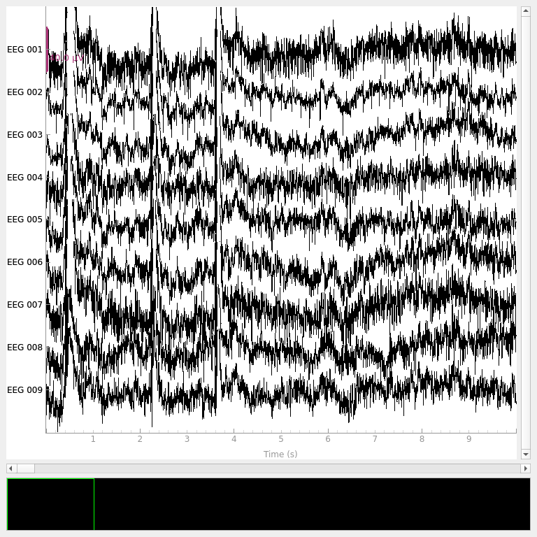
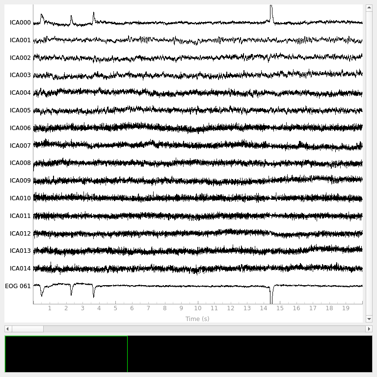
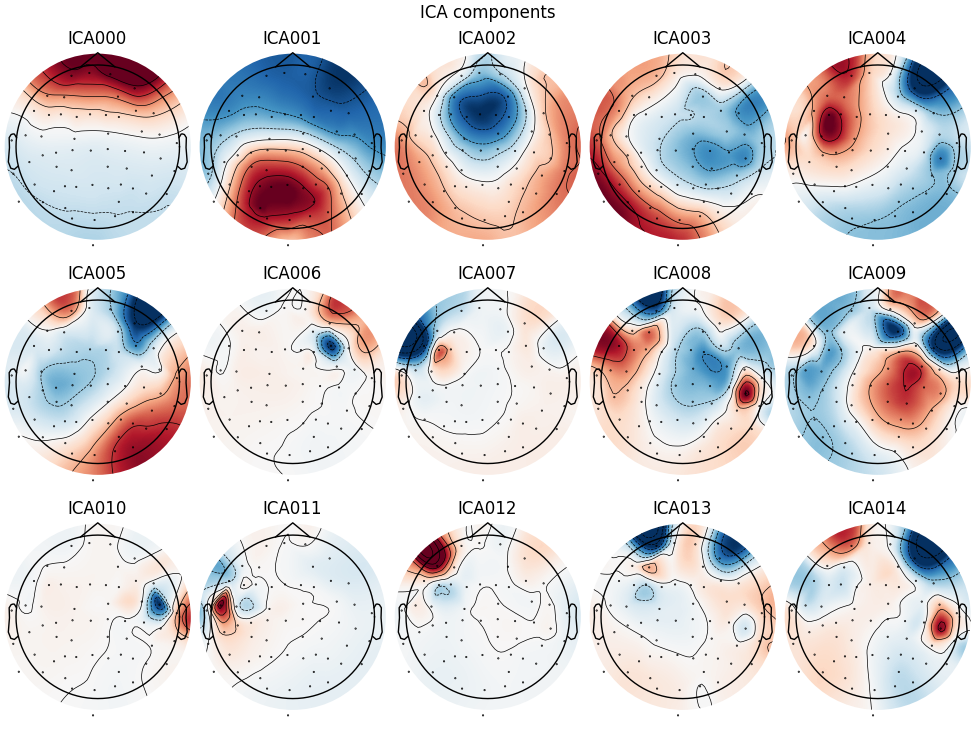
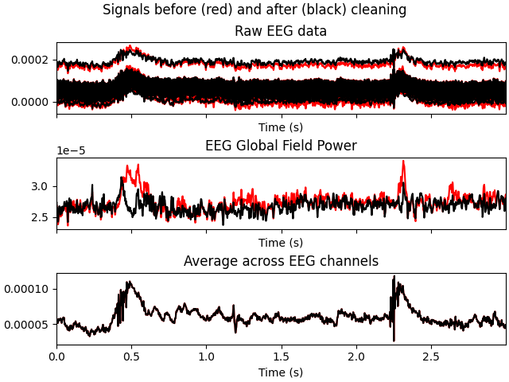
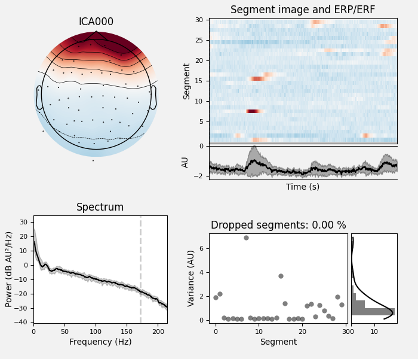
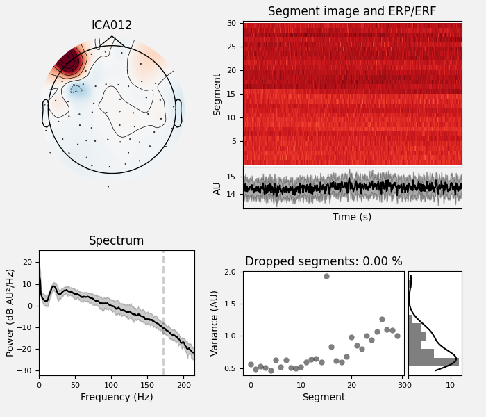
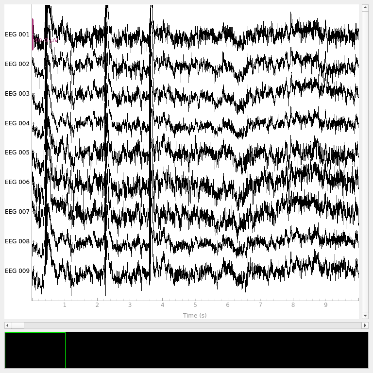

Note
Go to the end to download the full example code.
Repairing artifacts with ICA automatically using ICLabel Model#
This tutorial covers automatically repairing signals using ICA with the ICLabel model[1], which originates in EEGLab. For conceptual background on ICA, see this scikit-learn tutorial. For a basic understanding of how to use ICA to remove artifacts, see the tutorial in MNE-Python.
ICLabel is designed to classify ICs fitted with an extended infomax ICA decomposition algorithm on EEG datasets referenced to a common average and filtered between [1., 100.] Hz. It is possible to run ICLabel on datasets that do not meet those specification, but the classification performance might be negatively impacted. Moreover, the ICLabel paper did not study the effects of these preprocessing steps.
Note
This example involves running the ICA Infomax algorithm, which requires scikit-learn to be installed. Please install this optional dependency before running the example.
We begin as always by importing the necessary Python modules and loading some
example data. Because ICA can be computationally
intense, we’ll also crop the data to 60 seconds; and to save ourselves from
repeatedly typing mne.preprocessing we’ll directly import a few functions
and classes from that submodule.
import mne
from mne.preprocessing import ICA
from mne_icalabel import label_components
sample_data_folder = mne.datasets.sample.data_path() / "MEG" / "sample"
sample_data_raw_file = sample_data_folder / "sample_audvis_raw.fif"
raw = mne.io.read_raw_fif(sample_data_raw_file)
# we'll crop to 60 seconds and drop MEG channels
raw.crop(tmax=60.0).pick_types(eeg=True, stim=True, eog=True)
raw.load_data()
Using default location ~/mne_data for sample...
Creating /home/runner/mne_data
0%| | 0.00/1.65G [00:00<?, ?B/s]
0%| | 326k/1.65G [00:00<15:59, 1.72MB/s]
0%| | 779k/1.65G [00:00<09:23, 2.93MB/s]
0%| | 1.12M/1.65G [00:00<13:05, 2.10MB/s]
0%| | 1.37M/1.65G [00:00<13:18, 2.07MB/s]
0%| | 1.83M/1.65G [00:00<10:05, 2.73MB/s]
0%| | 2.14M/1.65G [00:00<11:57, 2.30MB/s]
0%| | 2.66M/1.65G [00:01<10:58, 2.51MB/s]
0%| | 3.19M/1.65G [00:01<10:30, 2.62MB/s]
0%| | 3.66M/1.65G [00:01<08:57, 3.07MB/s]
0%| | 4.00M/1.65G [00:01<11:26, 2.40MB/s]
0%| | 4.28M/1.65G [00:01<11:17, 2.43MB/s]
0%| | 4.55M/1.65G [00:01<12:24, 2.21MB/s]
0%| | 4.79M/1.65G [00:02<12:44, 2.16MB/s]
0%| | 5.07M/1.65G [00:02<11:56, 2.30MB/s]
0%| | 5.32M/1.65G [00:02<13:25, 2.04MB/s]
0%| | 5.54M/1.65G [00:02<16:08, 1.70MB/s]
0%|▏ | 5.80M/1.65G [00:02<16:40, 1.65MB/s]
0%|▏ | 6.06M/1.65G [00:02<15:06, 1.82MB/s]
0%|▏ | 6.59M/1.65G [00:02<12:55, 2.12MB/s]
0%|▏ | 6.85M/1.65G [00:03<12:42, 2.16MB/s]
0%|▏ | 7.11M/1.65G [00:03<13:36, 2.01MB/s]
0%|▏ | 7.37M/1.65G [00:03<13:01, 2.11MB/s]
0%|▏ | 7.63M/1.65G [00:03<12:18, 2.23MB/s]
0%|▏ | 8.05M/1.65G [00:03<10:03, 2.72MB/s]
1%|▏ | 8.34M/1.65G [00:03<10:07, 2.71MB/s]
1%|▏ | 8.68M/1.65G [00:03<12:00, 2.28MB/s]
1%|▏ | 8.94M/1.65G [00:03<11:46, 2.33MB/s]
1%|▏ | 9.20M/1.65G [00:04<11:39, 2.35MB/s]
1%|▏ | 9.72M/1.65G [00:04<10:58, 2.49MB/s]
1%|▏ | 9.99M/1.65G [00:04<11:00, 2.49MB/s]
1%|▏ | 10.5M/1.65G [00:04<10:45, 2.55MB/s]
1%|▏ | 10.8M/1.65G [00:04<10:40, 2.56MB/s]
1%|▏ | 11.0M/1.65G [00:04<11:59, 2.28MB/s]
1%|▎ | 11.3M/1.65G [00:04<14:08, 1.93MB/s]
1%|▎ | 11.6M/1.65G [00:05<15:07, 1.81MB/s]
1%|▎ | 11.8M/1.65G [00:05<15:48, 1.73MB/s]
1%|▎ | 12.1M/1.65G [00:05<15:09, 1.80MB/s]
1%|▎ | 12.3M/1.65G [00:05<15:42, 1.74MB/s]
1%|▎ | 12.6M/1.65G [00:05<15:10, 1.80MB/s]
1%|▎ | 12.9M/1.65G [00:05<14:18, 1.91MB/s]
1%|▎ | 13.1M/1.65G [00:05<13:52, 1.97MB/s]
1%|▎ | 13.4M/1.65G [00:06<13:43, 1.99MB/s]
1%|▎ | 13.6M/1.65G [00:06<13:13, 2.07MB/s]
1%|▎ | 13.9M/1.65G [00:06<12:56, 2.11MB/s]
1%|▎ | 14.2M/1.65G [00:06<13:03, 2.09MB/s]
1%|▎ | 14.4M/1.65G [00:06<12:37, 2.16MB/s]
1%|▎ | 14.7M/1.65G [00:06<12:55, 2.11MB/s]
1%|▎ | 15.0M/1.65G [00:06<14:12, 1.92MB/s]
1%|▎ | 15.2M/1.65G [00:07<13:32, 2.02MB/s]
1%|▎ | 15.6M/1.65G [00:07<10:33, 2.58MB/s]
1%|▎ | 16.0M/1.65G [00:07<11:46, 2.32MB/s]
1%|▎ | 16.5M/1.65G [00:07<10:33, 2.58MB/s]
1%|▍ | 16.8M/1.65G [00:07<10:36, 2.57MB/s]
1%|▍ | 17.0M/1.65G [00:07<11:33, 2.36MB/s]
1%|▍ | 17.4M/1.65G [00:07<10:40, 2.55MB/s]
1%|▍ | 17.6M/1.65G [00:07<11:15, 2.42MB/s]
1%|▍ | 17.9M/1.65G [00:08<11:39, 2.34MB/s]
1%|▍ | 18.1M/1.65G [00:08<11:42, 2.33MB/s]
1%|▍ | 18.4M/1.65G [00:08<11:46, 2.31MB/s]
1%|▍ | 18.6M/1.65G [00:08<13:07, 2.08MB/s]
1%|▍ | 18.9M/1.65G [00:08<13:15, 2.05MB/s]
1%|▍ | 19.1M/1.65G [00:08<12:34, 2.17MB/s]
1%|▍ | 19.7M/1.65G [00:08<11:51, 2.30MB/s]
1%|▍ | 19.9M/1.65G [00:08<12:09, 2.24MB/s]
1%|▍ | 20.3M/1.65G [00:09<10:27, 2.60MB/s]
1%|▍ | 20.6M/1.65G [00:09<10:54, 2.49MB/s]
1%|▍ | 20.8M/1.65G [00:09<11:13, 2.42MB/s]
1%|▍ | 21.1M/1.65G [00:09<12:05, 2.25MB/s]
1%|▍ | 21.3M/1.65G [00:09<12:32, 2.17MB/s]
1%|▍ | 21.5M/1.65G [00:09<12:32, 2.17MB/s]
1%|▍ | 22.0M/1.65G [00:09<12:53, 2.11MB/s]
1%|▍ | 22.3M/1.65G [00:10<13:34, 2.00MB/s]
1%|▌ | 22.6M/1.65G [00:10<11:33, 2.35MB/s]
1%|▌ | 22.9M/1.65G [00:10<11:33, 2.35MB/s]
1%|▌ | 23.3M/1.65G [00:10<11:29, 2.36MB/s]
1%|▌ | 23.6M/1.65G [00:10<11:21, 2.39MB/s]
1%|▌ | 24.1M/1.65G [00:10<10:37, 2.55MB/s]
1%|▌ | 24.6M/1.65G [00:10<10:05, 2.69MB/s]
2%|▌ | 24.9M/1.65G [00:11<10:22, 2.62MB/s]
2%|▌ | 25.2M/1.65G [00:11<10:57, 2.48MB/s]
2%|▌ | 25.4M/1.65G [00:11<10:59, 2.47MB/s]
2%|▌ | 25.7M/1.65G [00:11<11:02, 2.46MB/s]
2%|▌ | 26.1M/1.65G [00:11<09:16, 2.92MB/s]
2%|▌ | 26.5M/1.65G [00:11<11:26, 2.37MB/s]
2%|▌ | 26.7M/1.65G [00:11<11:57, 2.27MB/s]
2%|▌ | 27.0M/1.65G [00:11<11:44, 2.31MB/s]
2%|▌ | 27.5M/1.65G [00:12<11:15, 2.41MB/s]
2%|▌ | 27.8M/1.65G [00:12<11:44, 2.31MB/s]
2%|▋ | 28.1M/1.65G [00:12<10:22, 2.61MB/s]
2%|▋ | 28.5M/1.65G [00:12<11:15, 2.40MB/s]
2%|▋ | 28.8M/1.65G [00:12<11:58, 2.26MB/s]
2%|▋ | 29.1M/1.65G [00:12<12:14, 2.21MB/s]
2%|▋ | 29.3M/1.65G [00:12<12:16, 2.20MB/s]
2%|▋ | 29.6M/1.65G [00:13<11:52, 2.28MB/s]
2%|▋ | 29.9M/1.65G [00:13<12:41, 2.13MB/s]
2%|▋ | 30.1M/1.65G [00:13<12:24, 2.18MB/s]
2%|▋ | 30.6M/1.65G [00:13<11:24, 2.37MB/s]
2%|▋ | 30.9M/1.65G [00:13<11:27, 2.36MB/s]
2%|▋ | 31.2M/1.65G [00:13<10:36, 2.55MB/s]
2%|▋ | 31.5M/1.65G [00:13<10:40, 2.53MB/s]
2%|▋ | 31.8M/1.65G [00:13<10:15, 2.63MB/s]
2%|▋ | 32.1M/1.65G [00:14<09:44, 2.77MB/s]
2%|▋ | 32.5M/1.65G [00:14<10:54, 2.47MB/s]
2%|▋ | 33.0M/1.65G [00:14<10:25, 2.59MB/s]
2%|▊ | 33.5M/1.65G [00:14<10:08, 2.66MB/s]
2%|▊ | 33.8M/1.65G [00:14<10:37, 2.54MB/s]
2%|▊ | 34.0M/1.65G [00:14<11:07, 2.43MB/s]
2%|▊ | 34.4M/1.65G [00:14<09:40, 2.79MB/s]
2%|▊ | 34.8M/1.65G [00:15<10:22, 2.60MB/s]
2%|▊ | 35.1M/1.65G [00:15<10:31, 2.56MB/s]
2%|▊ | 35.6M/1.65G [00:15<10:21, 2.60MB/s]
2%|▊ | 35.9M/1.65G [00:15<10:26, 2.58MB/s]
2%|▊ | 36.1M/1.65G [00:15<11:12, 2.41MB/s]
2%|▊ | 36.4M/1.65G [00:15<11:46, 2.29MB/s]
2%|▊ | 36.7M/1.65G [00:15<11:29, 2.34MB/s]
2%|▊ | 36.9M/1.65G [00:15<11:12, 2.40MB/s]
2%|▊ | 37.3M/1.65G [00:16<10:01, 2.69MB/s]
2%|▊ | 37.7M/1.65G [00:16<10:22, 2.59MB/s]
2%|▊ | 38.2M/1.65G [00:16<09:57, 2.70MB/s]
2%|▊ | 38.5M/1.65G [00:16<09:56, 2.71MB/s]
2%|▊ | 38.8M/1.65G [00:16<10:12, 2.64MB/s]
2%|▊ | 39.0M/1.65G [00:16<10:13, 2.63MB/s]
2%|▉ | 39.3M/1.65G [00:16<10:27, 2.57MB/s]
2%|▉ | 39.8M/1.65G [00:17<10:15, 2.62MB/s]
2%|▉ | 40.3M/1.65G [00:17<09:13, 2.91MB/s]
2%|▉ | 40.6M/1.65G [00:17<09:15, 2.90MB/s]
2%|▉ | 41.1M/1.65G [00:17<09:25, 2.85MB/s]
3%|▉ | 41.4M/1.65G [00:17<09:43, 2.76MB/s]
3%|▉ | 41.7M/1.65G [00:17<10:37, 2.53MB/s]
3%|▉ | 41.9M/1.65G [00:18<19:24, 1.38MB/s]
3%|▉ | 42.1M/1.65G [00:18<18:29, 1.45MB/s]
3%|▉ | 42.4M/1.65G [00:18<18:06, 1.48MB/s]
3%|▉ | 42.7M/1.65G [00:18<18:05, 1.48MB/s]
3%|▉ | 42.9M/1.65G [00:18<18:11, 1.47MB/s]
3%|▉ | 43.2M/1.65G [00:18<17:04, 1.57MB/s]
3%|▉ | 43.4M/1.65G [00:19<17:31, 1.53MB/s]
3%|▉ | 43.7M/1.65G [00:19<16:44, 1.60MB/s]
3%|▉ | 44.0M/1.65G [00:19<15:13, 1.76MB/s]
3%|▉ | 44.2M/1.65G [00:19<14:36, 1.83MB/s]
3%|▉ | 44.5M/1.65G [00:19<14:15, 1.88MB/s]
3%|█ | 44.8M/1.65G [00:19<13:48, 1.94MB/s]
3%|█ | 45.0M/1.65G [00:19<13:45, 1.95MB/s]
3%|█ | 45.3M/1.65G [00:20<13:18, 2.01MB/s]
3%|█ | 45.5M/1.65G [00:20<13:05, 2.05MB/s]
3%|█ | 45.8M/1.65G [00:20<12:43, 2.11MB/s]
3%|█ | 46.1M/1.65G [00:20<12:23, 2.16MB/s]
3%|█ | 46.3M/1.65G [00:20<13:29, 1.98MB/s]
3%|█ | 46.6M/1.65G [00:20<12:53, 2.08MB/s]
3%|█ | 46.8M/1.65G [00:20<14:30, 1.84MB/s]
3%|█ | 47.1M/1.65G [00:20<13:47, 1.94MB/s]
3%|█ | 47.4M/1.65G [00:21<13:12, 2.03MB/s]
3%|█ | 47.6M/1.65G [00:21<13:05, 2.04MB/s]
3%|█ | 47.9M/1.65G [00:21<12:23, 2.16MB/s]
3%|█ | 48.2M/1.65G [00:21<12:10, 2.20MB/s]
3%|█ | 48.4M/1.65G [00:21<12:16, 2.18MB/s]
3%|█ | 48.7M/1.65G [00:21<11:35, 2.31MB/s]
3%|█ | 48.9M/1.65G [00:21<12:54, 2.07MB/s]
3%|█ | 49.2M/1.65G [00:21<12:07, 2.20MB/s]
3%|█ | 49.5M/1.65G [00:22<12:11, 2.19MB/s]
3%|█ | 49.7M/1.65G [00:22<11:36, 2.30MB/s]
3%|█ | 50.2M/1.65G [00:22<10:51, 2.46MB/s]
3%|█▏ | 50.5M/1.65G [00:22<11:08, 2.40MB/s]
3%|█▏ | 50.8M/1.65G [00:22<10:55, 2.45MB/s]
3%|█▏ | 51.0M/1.65G [00:22<11:05, 2.41MB/s]
3%|█▏ | 51.3M/1.65G [00:22<11:40, 2.29MB/s]
3%|█▏ | 51.6M/1.65G [00:22<12:18, 2.17MB/s]
3%|█▏ | 51.8M/1.65G [00:23<12:48, 2.08MB/s]
3%|█▏ | 52.1M/1.65G [00:23<12:59, 2.05MB/s]
3%|█▏ | 52.3M/1.65G [00:23<12:32, 2.13MB/s]
3%|█▏ | 52.7M/1.65G [00:23<11:00, 2.42MB/s]
3%|█▏ | 52.9M/1.65G [00:23<11:03, 2.41MB/s]
3%|█▏ | 53.2M/1.65G [00:23<11:03, 2.41MB/s]
3%|█▏ | 53.4M/1.65G [00:23<10:29, 2.54MB/s]
3%|█▏ | 53.7M/1.65G [00:23<10:55, 2.44MB/s]
3%|█▏ | 53.9M/1.65G [00:23<11:41, 2.28MB/s]
3%|█▏ | 54.2M/1.65G [00:24<11:57, 2.23MB/s]
3%|█▏ | 54.7M/1.65G [00:24<10:36, 2.51MB/s]
3%|█▏ | 55.0M/1.65G [00:24<10:00, 2.66MB/s]
3%|█▏ | 55.3M/1.65G [00:24<10:10, 2.62MB/s]
3%|█▏ | 55.5M/1.65G [00:24<10:12, 2.61MB/s]
3%|█▏ | 55.8M/1.65G [00:24<10:27, 2.55MB/s]
3%|█▎ | 56.0M/1.65G [00:24<10:53, 2.44MB/s]
3%|█▎ | 56.3M/1.65G [00:24<13:09, 2.02MB/s]
3%|█▎ | 56.5M/1.65G [00:25<14:51, 1.79MB/s]
3%|█▎ | 56.8M/1.65G [00:25<13:42, 1.94MB/s]
3%|█▎ | 57.3M/1.65G [00:25<12:04, 2.20MB/s]
3%|█▎ | 57.8M/1.65G [00:25<11:23, 2.33MB/s]
4%|█▎ | 58.1M/1.65G [00:25<12:26, 2.14MB/s]
4%|█▎ | 58.4M/1.65G [00:25<12:57, 2.05MB/s]
4%|█▎ | 58.6M/1.65G [00:26<13:00, 2.04MB/s]
4%|█▎ | 58.9M/1.65G [00:26<13:06, 2.03MB/s]
4%|█▎ | 59.1M/1.65G [00:26<12:17, 2.16MB/s]
4%|█▎ | 59.4M/1.65G [00:26<11:42, 2.27MB/s]
4%|█▎ | 59.8M/1.65G [00:26<09:40, 2.74MB/s]
4%|█▎ | 60.2M/1.65G [00:26<10:49, 2.45MB/s]
4%|█▎ | 60.6M/1.65G [00:26<09:02, 2.94MB/s]
4%|█▎ | 61.0M/1.65G [00:26<10:15, 2.59MB/s]
4%|█▎ | 61.2M/1.65G [00:27<10:17, 2.58MB/s]
4%|█▍ | 61.7M/1.65G [00:27<10:49, 2.45MB/s]
4%|█▍ | 62.0M/1.65G [00:27<10:53, 2.44MB/s]
4%|█▍ | 62.5M/1.65G [00:27<10:01, 2.64MB/s]
4%|█▍ | 62.8M/1.65G [00:27<10:35, 2.50MB/s]
4%|█▍ | 63.1M/1.65G [00:27<10:42, 2.47MB/s]
4%|█▍ | 63.3M/1.65G [00:27<11:27, 2.31MB/s]
4%|█▍ | 63.6M/1.65G [00:28<11:43, 2.26MB/s]
4%|█▍ | 63.8M/1.65G [00:28<12:07, 2.19MB/s]
4%|█▍ | 64.1M/1.65G [00:28<11:48, 2.24MB/s]
4%|█▍ | 64.4M/1.65G [00:28<13:07, 2.02MB/s]
4%|█▍ | 64.6M/1.65G [00:28<13:47, 1.92MB/s]
4%|█▍ | 64.9M/1.65G [00:28<14:01, 1.89MB/s]
4%|█▍ | 65.1M/1.65G [00:28<13:44, 1.93MB/s]
4%|█▍ | 65.4M/1.65G [00:29<14:41, 1.80MB/s]
4%|█▍ | 65.7M/1.65G [00:29<14:24, 1.84MB/s]
4%|█▍ | 65.9M/1.65G [00:29<13:15, 2.00MB/s]
4%|█▍ | 66.2M/1.65G [00:29<12:38, 2.09MB/s]
4%|█▍ | 66.5M/1.65G [00:29<12:08, 2.18MB/s]
4%|█▍ | 66.7M/1.65G [00:29<12:25, 2.13MB/s]
4%|█▍ | 67.0M/1.65G [00:29<12:07, 2.18MB/s]
4%|█▌ | 67.2M/1.65G [00:29<11:49, 2.24MB/s]
4%|█▌ | 67.5M/1.65G [00:29<11:37, 2.27MB/s]
4%|█▌ | 67.8M/1.65G [00:30<11:15, 2.35MB/s]
4%|█▌ | 68.3M/1.65G [00:30<10:13, 2.58MB/s]
4%|█▌ | 68.5M/1.65G [00:30<10:11, 2.59MB/s]
4%|█▌ | 68.8M/1.65G [00:30<09:46, 2.70MB/s]
4%|█▌ | 69.1M/1.65G [00:30<09:56, 2.66MB/s]
4%|█▌ | 69.4M/1.65G [00:30<11:37, 2.27MB/s]
4%|█▌ | 69.6M/1.65G [00:30<12:24, 2.13MB/s]
4%|█▌ | 70.1M/1.65G [00:31<11:29, 2.30MB/s]
4%|█▌ | 70.6M/1.65G [00:31<11:04, 2.38MB/s]
4%|█▌ | 70.9M/1.65G [00:31<11:23, 2.31MB/s]
4%|█▌ | 71.2M/1.65G [00:31<11:22, 2.32MB/s]
4%|█▌ | 71.4M/1.65G [00:31<12:11, 2.16MB/s]
4%|█▌ | 71.7M/1.65G [00:31<12:37, 2.09MB/s]
4%|█▌ | 71.9M/1.65G [00:31<12:52, 2.05MB/s]
4%|█▌ | 72.2M/1.65G [00:31<12:33, 2.10MB/s]
4%|█▌ | 72.5M/1.65G [00:32<12:16, 2.15MB/s]
4%|█▋ | 72.7M/1.65G [00:32<11:56, 2.21MB/s]
4%|█▋ | 73.0M/1.65G [00:32<11:57, 2.20MB/s]
4%|█▋ | 73.3M/1.65G [00:32<12:35, 2.09MB/s]
4%|█▋ | 73.5M/1.65G [00:32<12:11, 2.16MB/s]
4%|█▋ | 73.8M/1.65G [00:32<11:44, 2.24MB/s]
4%|█▋ | 74.0M/1.65G [00:32<11:53, 2.21MB/s]
4%|█▋ | 74.3M/1.65G [00:32<11:58, 2.20MB/s]
5%|█▋ | 74.6M/1.65G [00:33<12:20, 2.13MB/s]
5%|█▋ | 74.8M/1.65G [00:33<11:50, 2.22MB/s]
5%|█▋ | 75.1M/1.65G [00:33<12:54, 2.04MB/s]
5%|█▋ | 75.3M/1.65G [00:33<14:01, 1.87MB/s]
5%|█▋ | 75.6M/1.65G [00:33<13:38, 1.93MB/s]
5%|█▋ | 76.1M/1.65G [00:33<11:45, 2.23MB/s]
5%|█▋ | 76.4M/1.65G [00:33<11:37, 2.26MB/s]
5%|█▋ | 76.6M/1.65G [00:34<12:13, 2.15MB/s]
5%|█▋ | 76.9M/1.65G [00:34<12:22, 2.12MB/s]
5%|█▋ | 77.2M/1.65G [00:34<11:58, 2.19MB/s]
5%|█▋ | 77.4M/1.65G [00:34<11:30, 2.28MB/s]
5%|█▋ | 77.7M/1.65G [00:34<11:07, 2.36MB/s]
5%|█▋ | 78.0M/1.65G [00:34<11:03, 2.37MB/s]
5%|█▊ | 78.2M/1.65G [00:34<10:52, 2.41MB/s]
5%|█▊ | 78.5M/1.65G [00:34<10:40, 2.46MB/s]
5%|█▊ | 78.7M/1.65G [00:34<10:36, 2.47MB/s]
5%|█▊ | 79.0M/1.65G [00:35<10:44, 2.44MB/s]
5%|█▊ | 79.3M/1.65G [00:35<10:31, 2.49MB/s]
5%|█▊ | 79.5M/1.65G [00:35<11:01, 2.38MB/s]
5%|█▊ | 79.8M/1.65G [00:35<11:47, 2.22MB/s]
5%|█▊ | 80.0M/1.65G [00:35<11:40, 2.25MB/s]
5%|█▊ | 80.3M/1.65G [00:35<11:21, 2.31MB/s]
5%|█▊ | 80.6M/1.65G [00:35<11:16, 2.32MB/s]
5%|█▊ | 80.8M/1.65G [00:35<11:22, 2.30MB/s]
5%|█▊ | 81.1M/1.65G [00:35<11:32, 2.27MB/s]
5%|█▊ | 81.4M/1.65G [00:36<11:17, 2.32MB/s]
5%|█▊ | 81.9M/1.65G [00:36<10:34, 2.48MB/s]
5%|█▊ | 82.1M/1.65G [00:36<10:28, 2.50MB/s]
5%|█▊ | 82.6M/1.65G [00:36<08:52, 2.95MB/s]
5%|█▊ | 82.9M/1.65G [00:36<08:56, 2.92MB/s]
5%|█▊ | 83.2M/1.65G [00:36<09:08, 2.86MB/s]
5%|█▊ | 83.5M/1.65G [00:36<11:49, 2.21MB/s]
5%|█▉ | 84.0M/1.65G [00:37<10:15, 2.55MB/s]
5%|█▉ | 84.5M/1.65G [00:37<09:13, 2.83MB/s]
5%|█▉ | 85.0M/1.65G [00:37<08:31, 3.07MB/s]
5%|█▉ | 85.5M/1.65G [00:37<08:15, 3.16MB/s]
5%|█▉ | 85.9M/1.65G [00:37<08:36, 3.03MB/s]
5%|█▉ | 86.2M/1.65G [00:37<08:45, 2.98MB/s]
5%|█▉ | 86.5M/1.65G [00:37<08:48, 2.97MB/s]
5%|█▉ | 86.8M/1.65G [00:38<10:52, 2.40MB/s]
5%|█▉ | 87.1M/1.65G [00:38<11:13, 2.32MB/s]
5%|█▉ | 87.4M/1.65G [00:38<11:16, 2.31MB/s]
5%|█▉ | 87.6M/1.65G [00:38<12:45, 2.04MB/s]
5%|█▉ | 87.9M/1.65G [00:38<13:14, 1.97MB/s]
5%|█▉ | 88.2M/1.65G [00:38<12:57, 2.01MB/s]
5%|█▉ | 88.4M/1.65G [00:38<12:51, 2.03MB/s]
5%|█▉ | 88.7M/1.65G [00:38<12:47, 2.04MB/s]
5%|█▉ | 88.9M/1.65G [00:39<12:59, 2.01MB/s]
5%|█▉ | 89.2M/1.65G [00:39<12:38, 2.06MB/s]
5%|██ | 89.5M/1.65G [00:39<12:11, 2.14MB/s]
5%|██ | 89.7M/1.65G [00:39<12:02, 2.16MB/s]
5%|██ | 90.0M/1.65G [00:39<11:57, 2.18MB/s]
5%|██ | 90.2M/1.65G [00:39<11:48, 2.20MB/s]
5%|██ | 90.5M/1.65G [00:39<12:04, 2.16MB/s]
5%|██ | 90.8M/1.65G [00:39<13:44, 1.89MB/s]
6%|██ | 91.0M/1.65G [00:40<14:26, 1.80MB/s]
6%|██ | 91.3M/1.65G [00:40<14:06, 1.84MB/s]
6%|██ | 91.6M/1.65G [00:40<13:56, 1.87MB/s]
6%|██ | 91.8M/1.65G [00:40<13:26, 1.94MB/s]
6%|██ | 92.1M/1.65G [00:40<12:25, 2.09MB/s]
6%|██ | 92.3M/1.65G [00:40<12:00, 2.16MB/s]
6%|██ | 92.6M/1.65G [00:40<11:53, 2.19MB/s]
6%|██ | 92.9M/1.65G [00:41<12:11, 2.13MB/s]
6%|██ | 93.1M/1.65G [00:41<11:56, 2.18MB/s]
6%|██ | 93.4M/1.65G [00:41<12:10, 2.13MB/s]
6%|██ | 93.6M/1.65G [00:41<12:08, 2.14MB/s]
6%|██ | 93.9M/1.65G [00:41<11:38, 2.23MB/s]
6%|██ | 94.2M/1.65G [00:41<11:16, 2.31MB/s]
6%|██ | 94.4M/1.65G [00:41<11:21, 2.29MB/s]
6%|██ | 94.7M/1.65G [00:41<11:09, 2.33MB/s]
6%|██▏ | 95.2M/1.65G [00:41<10:09, 2.55MB/s]
6%|██▏ | 95.5M/1.65G [00:42<10:17, 2.52MB/s]
6%|██▏ | 95.8M/1.65G [00:42<09:59, 2.60MB/s]
6%|██▏ | 96.0M/1.65G [00:42<10:01, 2.59MB/s]
6%|██▏ | 96.5M/1.65G [00:42<07:59, 3.24MB/s]
6%|██▏ | 96.8M/1.65G [00:42<10:19, 2.51MB/s]
6%|██▏ | 97.1M/1.65G [00:42<10:19, 2.51MB/s]
6%|██▏ | 97.4M/1.65G [00:42<09:46, 2.65MB/s]
6%|██▏ | 97.7M/1.65G [00:42<09:44, 2.66MB/s]
6%|██▏ | 98.1M/1.65G [00:43<10:56, 2.37MB/s]
6%|██▏ | 98.3M/1.65G [00:43<11:19, 2.29MB/s]
6%|██▏ | 98.6M/1.65G [00:43<11:06, 2.33MB/s]
6%|██▏ | 99.1M/1.65G [00:43<10:39, 2.43MB/s]
6%|██▏ | 99.4M/1.65G [00:43<11:00, 2.35MB/s]
6%|██▏ | 99.7M/1.65G [00:43<11:47, 2.20MB/s]
6%|██▎ | 100M/1.65G [00:43<09:52, 2.62MB/s]
6%|██▎ | 100M/1.65G [00:44<09:54, 2.61MB/s]
6%|██▎ | 101M/1.65G [00:44<11:00, 2.35MB/s]
6%|██▎ | 101M/1.65G [00:44<10:25, 2.48MB/s]
6%|██▎ | 101M/1.65G [00:44<10:24, 2.48MB/s]
6%|██▎ | 102M/1.65G [00:44<10:47, 2.39MB/s]
6%|██▎ | 102M/1.65G [00:44<10:16, 2.52MB/s]
6%|██▎ | 103M/1.65G [00:44<10:15, 2.52MB/s]
6%|██▎ | 103M/1.65G [00:45<10:21, 2.49MB/s]
6%|██▎ | 103M/1.65G [00:45<10:17, 2.51MB/s]
6%|██▍ | 104M/1.65G [00:45<09:39, 2.68MB/s]
6%|██▍ | 104M/1.65G [00:45<09:49, 2.63MB/s]
6%|██▍ | 104M/1.65G [00:45<10:03, 2.57MB/s]
6%|██▍ | 104M/1.65G [00:45<10:15, 2.52MB/s]
6%|██▍ | 105M/1.65G [00:45<10:27, 2.47MB/s]
6%|██▍ | 105M/1.65G [00:45<08:47, 2.93MB/s]
6%|██▍ | 105M/1.65G [00:45<09:15, 2.78MB/s]
6%|██▍ | 106M/1.65G [00:46<10:14, 2.52MB/s]
6%|██▍ | 106M/1.65G [00:46<10:28, 2.46MB/s]
6%|██▍ | 106M/1.65G [00:46<11:36, 2.22MB/s]
6%|██▍ | 107M/1.65G [00:46<09:42, 2.66MB/s]
6%|██▍ | 107M/1.65G [00:46<09:14, 2.79MB/s]
7%|██▍ | 108M/1.65G [00:46<08:44, 2.94MB/s]
7%|██▍ | 108M/1.65G [00:47<08:09, 3.16MB/s]
7%|██▌ | 109M/1.65G [00:47<07:52, 3.27MB/s]
7%|██▌ | 109M/1.65G [00:47<07:59, 3.22MB/s]
7%|██▌ | 110M/1.65G [00:47<07:52, 3.27MB/s]
7%|██▌ | 110M/1.65G [00:47<07:55, 3.24MB/s]
7%|██▌ | 111M/1.65G [00:47<08:20, 3.08MB/s]
7%|██▌ | 111M/1.65G [00:47<09:22, 2.74MB/s]
7%|██▌ | 111M/1.65G [00:47<09:25, 2.73MB/s]
7%|██▌ | 111M/1.65G [00:48<09:37, 2.67MB/s]
7%|██▌ | 112M/1.65G [00:48<10:07, 2.54MB/s]
7%|██▌ | 112M/1.65G [00:48<11:27, 2.24MB/s]
7%|██▌ | 112M/1.65G [00:48<13:52, 1.85MB/s]
7%|██▌ | 112M/1.65G [00:48<13:38, 1.88MB/s]
7%|██▌ | 113M/1.65G [00:48<12:56, 1.98MB/s]
7%|██▌ | 113M/1.65G [00:48<12:22, 2.07MB/s]
7%|██▌ | 113M/1.65G [00:49<12:08, 2.11MB/s]
7%|██▌ | 114M/1.65G [00:49<11:58, 2.14MB/s]
7%|██▌ | 114M/1.65G [00:49<11:24, 2.25MB/s]
7%|██▌ | 114M/1.65G [00:49<11:13, 2.29MB/s]
7%|██▋ | 114M/1.65G [00:49<11:37, 2.21MB/s]
7%|██▋ | 115M/1.65G [00:49<12:46, 2.01MB/s]
7%|██▋ | 115M/1.65G [00:49<12:20, 2.08MB/s]
7%|██▋ | 115M/1.65G [00:49<10:43, 2.39MB/s]
7%|██▋ | 116M/1.65G [00:50<10:18, 2.49MB/s]
7%|██▋ | 116M/1.65G [00:50<11:11, 2.29MB/s]
7%|██▋ | 116M/1.65G [00:50<11:04, 2.31MB/s]
7%|██▋ | 117M/1.65G [00:50<11:24, 2.24MB/s]
7%|██▋ | 117M/1.65G [00:50<10:36, 2.41MB/s]
7%|██▋ | 117M/1.65G [00:50<11:07, 2.30MB/s]
7%|██▋ | 118M/1.65G [00:50<11:11, 2.29MB/s]
7%|██▋ | 118M/1.65G [00:51<10:33, 2.42MB/s]
7%|██▋ | 118M/1.65G [00:51<10:25, 2.45MB/s]
7%|██▋ | 119M/1.65G [00:51<09:48, 2.61MB/s]
7%|██▋ | 119M/1.65G [00:51<10:03, 2.54MB/s]
7%|██▋ | 120M/1.65G [00:51<10:18, 2.48MB/s]
7%|██▊ | 120M/1.65G [00:51<10:24, 2.46MB/s]
7%|██▊ | 120M/1.65G [00:51<11:49, 2.16MB/s]
7%|██▊ | 120M/1.65G [00:52<11:35, 2.20MB/s]
7%|██▊ | 121M/1.65G [00:52<10:24, 2.45MB/s]
7%|██▊ | 121M/1.65G [00:52<09:39, 2.64MB/s]
7%|██▊ | 122M/1.65G [00:52<09:56, 2.57MB/s]
7%|██▊ | 122M/1.65G [00:52<09:56, 2.57MB/s]
7%|██▊ | 122M/1.65G [00:52<10:47, 2.36MB/s]
7%|██▊ | 122M/1.65G [00:52<11:30, 2.22MB/s]
7%|██▊ | 123M/1.65G [00:53<09:35, 2.66MB/s]
7%|██▊ | 123M/1.65G [00:53<09:43, 2.62MB/s]
7%|██▊ | 123M/1.65G [00:53<10:56, 2.33MB/s]
7%|██▊ | 124M/1.65G [00:53<09:19, 2.73MB/s]
8%|██▊ | 124M/1.65G [00:53<09:32, 2.67MB/s]
8%|██▊ | 124M/1.65G [00:53<09:29, 2.68MB/s]
8%|██▊ | 125M/1.65G [00:53<09:56, 2.56MB/s]
8%|██▊ | 125M/1.65G [00:53<09:54, 2.57MB/s]
8%|██▉ | 125M/1.65G [00:54<11:27, 2.22MB/s]
8%|██▉ | 125M/1.65G [00:54<12:18, 2.07MB/s]
8%|██▉ | 126M/1.65G [00:54<13:04, 1.95MB/s]
8%|██▉ | 126M/1.65G [00:54<12:37, 2.01MB/s]
8%|██▉ | 126M/1.65G [00:54<11:57, 2.13MB/s]
8%|██▉ | 127M/1.65G [00:54<11:28, 2.22MB/s]
8%|██▉ | 127M/1.65G [00:54<12:53, 1.97MB/s]
8%|██▉ | 127M/1.65G [00:55<15:32, 1.64MB/s]
8%|██▉ | 127M/1.65G [00:55<14:09, 1.79MB/s]
8%|██▉ | 128M/1.65G [00:55<13:00, 1.95MB/s]
8%|██▉ | 128M/1.65G [00:55<11:32, 2.20MB/s]
8%|██▉ | 128M/1.65G [00:55<11:30, 2.21MB/s]
8%|██▉ | 128M/1.65G [00:55<11:34, 2.20MB/s]
8%|██▉ | 129M/1.65G [00:55<11:20, 2.24MB/s]
8%|██▉ | 129M/1.65G [00:55<10:52, 2.33MB/s]
8%|██▉ | 129M/1.65G [00:55<10:49, 2.35MB/s]
8%|██▉ | 129M/1.65G [00:56<10:46, 2.36MB/s]
8%|██▉ | 130M/1.65G [00:56<11:04, 2.29MB/s]
8%|██▉ | 130M/1.65G [00:56<12:03, 2.10MB/s]
8%|██▉ | 130M/1.65G [00:56<10:33, 2.40MB/s]
8%|███ | 131M/1.65G [00:56<11:05, 2.29MB/s]
8%|███ | 131M/1.65G [00:56<10:01, 2.53MB/s]
8%|███ | 131M/1.65G [00:56<10:13, 2.48MB/s]
8%|███ | 131M/1.65G [00:56<10:32, 2.40MB/s]
8%|███ | 132M/1.65G [00:56<11:51, 2.14MB/s]
8%|███ | 132M/1.65G [00:57<12:10, 2.08MB/s]
8%|███ | 132M/1.65G [00:57<12:33, 2.02MB/s]
8%|███ | 132M/1.65G [00:57<12:09, 2.08MB/s]
8%|███ | 133M/1.65G [00:57<12:08, 2.09MB/s]
8%|███ | 133M/1.65G [00:57<10:59, 2.30MB/s]
8%|███ | 133M/1.65G [00:57<10:39, 2.38MB/s]
8%|███ | 134M/1.65G [00:57<10:58, 2.31MB/s]
8%|███ | 134M/1.65G [00:58<10:53, 2.32MB/s]
8%|███ | 134M/1.65G [00:58<10:58, 2.31MB/s]
8%|███ | 135M/1.65G [00:58<08:30, 2.98MB/s]
8%|███ | 135M/1.65G [00:58<12:08, 2.08MB/s]
8%|███ | 135M/1.65G [00:58<11:57, 2.11MB/s]
8%|███ | 135M/1.65G [00:58<11:46, 2.15MB/s]
8%|███ | 136M/1.65G [00:58<12:00, 2.10MB/s]
8%|███▏ | 136M/1.65G [00:58<12:31, 2.02MB/s]
8%|███▏ | 136M/1.65G [00:59<11:57, 2.11MB/s]
8%|███▏ | 137M/1.65G [00:59<12:14, 2.06MB/s]
8%|███▏ | 137M/1.65G [00:59<11:30, 2.20MB/s]
8%|███▏ | 137M/1.65G [00:59<09:41, 2.61MB/s]
8%|███▏ | 138M/1.65G [00:59<10:18, 2.45MB/s]
8%|███▏ | 138M/1.65G [00:59<10:06, 2.50MB/s]
8%|███▏ | 138M/1.65G [00:59<10:03, 2.51MB/s]
8%|███▏ | 138M/1.65G [00:59<09:00, 2.80MB/s]
8%|███▏ | 139M/1.65G [01:00<09:15, 2.72MB/s]
8%|███▏ | 139M/1.65G [01:00<09:22, 2.69MB/s]
8%|███▏ | 139M/1.65G [01:00<09:24, 2.68MB/s]
8%|███▏ | 140M/1.65G [01:00<10:11, 2.48MB/s]
8%|███▏ | 140M/1.65G [01:00<09:45, 2.59MB/s]
8%|███▏ | 140M/1.65G [01:00<09:21, 2.69MB/s]
9%|███▏ | 141M/1.65G [01:00<09:05, 2.77MB/s]
9%|███▏ | 141M/1.65G [01:00<09:32, 2.64MB/s]
9%|███▎ | 142M/1.65G [01:01<09:17, 2.71MB/s]
9%|███▎ | 142M/1.65G [01:01<09:29, 2.65MB/s]
9%|███▎ | 142M/1.65G [01:01<09:51, 2.55MB/s]
9%|███▎ | 143M/1.65G [01:01<10:15, 2.45MB/s]
9%|███▎ | 143M/1.65G [01:01<09:37, 2.61MB/s]
9%|███▎ | 143M/1.65G [01:01<09:58, 2.52MB/s]
9%|███▎ | 143M/1.65G [01:01<10:37, 2.37MB/s]
9%|███▎ | 144M/1.65G [01:01<10:58, 2.29MB/s]
9%|███▎ | 144M/1.65G [01:02<12:47, 1.96MB/s]
9%|███▎ | 144M/1.65G [01:02<12:26, 2.02MB/s]
9%|███▎ | 144M/1.65G [01:02<12:26, 2.02MB/s]
9%|███▎ | 145M/1.65G [01:02<10:55, 2.30MB/s]
9%|███▎ | 145M/1.65G [01:02<11:13, 2.24MB/s]
9%|███▎ | 145M/1.65G [01:02<11:31, 2.18MB/s]
9%|███▎ | 146M/1.65G [01:02<11:01, 2.28MB/s]
9%|███▎ | 146M/1.65G [01:03<11:31, 2.18MB/s]
9%|███▎ | 146M/1.65G [01:03<11:24, 2.20MB/s]
9%|███▎ | 146M/1.65G [01:03<10:57, 2.29MB/s]
9%|███▍ | 147M/1.65G [01:03<10:05, 2.49MB/s]
9%|███▍ | 147M/1.65G [01:03<10:05, 2.49MB/s]
9%|███▍ | 147M/1.65G [01:03<10:16, 2.44MB/s]
9%|███▍ | 148M/1.65G [01:03<10:23, 2.41MB/s]
9%|███▍ | 148M/1.65G [01:03<10:23, 2.41MB/s]
9%|███▍ | 148M/1.65G [01:03<09:08, 2.74MB/s]
9%|███▍ | 149M/1.65G [01:04<10:56, 2.29MB/s]
9%|███▍ | 149M/1.65G [01:04<12:04, 2.07MB/s]
9%|███▍ | 149M/1.65G [01:04<11:56, 2.10MB/s]
9%|███▍ | 150M/1.65G [01:04<11:23, 2.20MB/s]
9%|███▍ | 150M/1.65G [01:04<12:00, 2.08MB/s]
9%|███▍ | 150M/1.65G [01:05<12:40, 1.98MB/s]
9%|███▍ | 151M/1.65G [01:05<13:12, 1.90MB/s]
9%|███▍ | 151M/1.65G [01:05<13:31, 1.85MB/s]
9%|███▍ | 151M/1.65G [01:05<13:28, 1.86MB/s]
9%|███▍ | 152M/1.65G [01:05<11:52, 2.11MB/s]
9%|███▍ | 152M/1.65G [01:05<11:21, 2.20MB/s]
9%|███▌ | 153M/1.65G [01:06<10:27, 2.39MB/s]
9%|███▌ | 153M/1.65G [01:06<10:44, 2.33MB/s]
9%|███▌ | 154M/1.65G [01:06<10:47, 2.31MB/s]
9%|███▌ | 154M/1.65G [01:06<10:44, 2.33MB/s]
9%|███▌ | 154M/1.65G [01:06<11:04, 2.25MB/s]
9%|███▌ | 154M/1.65G [01:06<11:08, 2.24MB/s]
9%|███▌ | 155M/1.65G [01:06<11:18, 2.21MB/s]
9%|███▌ | 155M/1.65G [01:07<12:03, 2.07MB/s]
9%|███▌ | 155M/1.65G [01:07<11:25, 2.18MB/s]
9%|███▌ | 156M/1.65G [01:07<10:17, 2.43MB/s]
9%|███▌ | 156M/1.65G [01:07<10:13, 2.44MB/s]
9%|███▌ | 156M/1.65G [01:07<09:49, 2.54MB/s]
9%|███▌ | 157M/1.65G [01:07<07:58, 3.12MB/s]
10%|███▌ | 157M/1.65G [01:07<10:24, 2.39MB/s]
10%|███▌ | 158M/1.65G [01:08<10:31, 2.37MB/s]
10%|███▋ | 158M/1.65G [01:08<10:33, 2.36MB/s]
10%|███▋ | 158M/1.65G [01:08<10:56, 2.28MB/s]
10%|███▋ | 158M/1.65G [01:08<11:56, 2.09MB/s]
10%|███▋ | 158M/1.65G [01:08<12:20, 2.02MB/s]
10%|███▋ | 159M/1.65G [01:08<12:04, 2.06MB/s]
10%|███▋ | 159M/1.65G [01:08<11:55, 2.09MB/s]
10%|███▋ | 160M/1.65G [01:09<10:51, 2.29MB/s]
10%|███▋ | 160M/1.65G [01:09<10:52, 2.29MB/s]
10%|███▋ | 160M/1.65G [01:09<10:45, 2.31MB/s]
10%|███▋ | 161M/1.65G [01:09<10:00, 2.48MB/s]
10%|███▋ | 161M/1.65G [01:09<09:43, 2.56MB/s]
10%|███▋ | 162M/1.65G [01:09<08:22, 2.97MB/s]
10%|███▋ | 162M/1.65G [01:09<09:00, 2.76MB/s]
10%|███▋ | 162M/1.65G [01:10<11:52, 2.09MB/s]
10%|███▋ | 162M/1.65G [01:10<11:27, 2.17MB/s]
10%|███▋ | 163M/1.65G [01:10<11:32, 2.15MB/s]
10%|███▋ | 163M/1.65G [01:10<09:59, 2.49MB/s]
10%|███▊ | 163M/1.65G [01:10<10:10, 2.44MB/s]
10%|███▊ | 164M/1.65G [01:10<09:20, 2.66MB/s]
10%|███▊ | 164M/1.65G [01:10<09:05, 2.73MB/s]
10%|███▊ | 165M/1.65G [01:11<09:07, 2.72MB/s]
10%|███▊ | 165M/1.65G [01:11<09:13, 2.69MB/s]
10%|███▊ | 165M/1.65G [01:11<09:34, 2.59MB/s]
10%|███▊ | 166M/1.65G [01:11<09:35, 2.59MB/s]
10%|███▊ | 166M/1.65G [01:11<10:23, 2.38MB/s]
10%|███▊ | 166M/1.65G [01:11<11:15, 2.20MB/s]
10%|███▊ | 167M/1.65G [01:11<10:23, 2.38MB/s]
10%|███▊ | 167M/1.65G [01:11<10:25, 2.37MB/s]
10%|███▊ | 167M/1.65G [01:12<10:41, 2.32MB/s]
10%|███▊ | 167M/1.65G [01:12<10:58, 2.26MB/s]
10%|███▊ | 168M/1.65G [01:12<10:47, 2.29MB/s]
10%|███▊ | 168M/1.65G [01:12<10:43, 2.31MB/s]
10%|███▊ | 168M/1.65G [01:12<10:57, 2.26MB/s]
10%|███▊ | 168M/1.65G [01:12<11:43, 2.11MB/s]
10%|███▉ | 169M/1.65G [01:12<11:16, 2.19MB/s]
10%|███▉ | 169M/1.65G [01:13<10:12, 2.42MB/s]
10%|███▉ | 169M/1.65G [01:13<10:34, 2.34MB/s]
10%|███▉ | 170M/1.65G [01:13<10:34, 2.34MB/s]
10%|███▉ | 170M/1.65G [01:13<08:24, 2.94MB/s]
10%|███▉ | 171M/1.65G [01:13<10:37, 2.33MB/s]
10%|███▉ | 171M/1.65G [01:13<09:43, 2.54MB/s]
10%|███▉ | 171M/1.65G [01:13<09:40, 2.55MB/s]
10%|███▉ | 172M/1.65G [01:13<07:50, 3.15MB/s]
10%|███▉ | 172M/1.65G [01:14<08:58, 2.75MB/s]
10%|███▉ | 173M/1.65G [01:14<09:14, 2.67MB/s]
10%|███▉ | 173M/1.65G [01:14<09:00, 2.74MB/s]
10%|███▉ | 173M/1.65G [01:14<09:51, 2.50MB/s]
11%|███▉ | 174M/1.65G [01:14<10:14, 2.41MB/s]
11%|███▉ | 174M/1.65G [01:14<10:18, 2.39MB/s]
11%|████ | 174M/1.65G [01:15<09:33, 2.58MB/s]
11%|████ | 175M/1.65G [01:15<08:44, 2.82MB/s]
11%|████ | 175M/1.65G [01:15<09:19, 2.64MB/s]
11%|████ | 176M/1.65G [01:15<09:32, 2.58MB/s]
11%|████ | 176M/1.65G [01:15<10:02, 2.45MB/s]
11%|████ | 176M/1.65G [01:15<10:05, 2.44MB/s]
11%|████ | 177M/1.65G [01:15<09:34, 2.57MB/s]
11%|████ | 177M/1.65G [01:16<09:15, 2.66MB/s]
11%|████ | 178M/1.65G [01:16<09:30, 2.59MB/s]
11%|████ | 178M/1.65G [01:16<09:49, 2.50MB/s]
11%|████ | 178M/1.65G [01:16<10:02, 2.45MB/s]
11%|████ | 178M/1.65G [01:16<10:29, 2.34MB/s]
11%|████ | 179M/1.65G [01:16<10:22, 2.37MB/s]
11%|████ | 179M/1.65G [01:16<10:09, 2.42MB/s]
11%|████ | 179M/1.65G [01:16<09:27, 2.60MB/s]
11%|████▏ | 180M/1.65G [01:17<09:02, 2.72MB/s]
11%|████▏ | 180M/1.65G [01:17<09:09, 2.68MB/s]
11%|████▏ | 181M/1.65G [01:17<09:12, 2.66MB/s]
11%|████▏ | 181M/1.65G [01:17<09:53, 2.48MB/s]
11%|████▏ | 181M/1.65G [01:17<10:39, 2.30MB/s]
11%|████▏ | 181M/1.65G [01:17<11:19, 2.17MB/s]
11%|████▏ | 182M/1.65G [01:17<10:51, 2.26MB/s]
11%|████▏ | 182M/1.65G [01:18<10:19, 2.37MB/s]
11%|████▏ | 183M/1.65G [01:18<10:31, 2.33MB/s]
11%|████▏ | 183M/1.65G [01:18<10:24, 2.35MB/s]
11%|████▏ | 183M/1.65G [01:18<10:19, 2.37MB/s]
11%|████▏ | 184M/1.65G [01:18<10:05, 2.43MB/s]
11%|████▏ | 184M/1.65G [01:18<11:24, 2.15MB/s]
11%|████▏ | 184M/1.65G [01:19<11:10, 2.19MB/s]
11%|████▏ | 184M/1.65G [01:19<10:40, 2.29MB/s]
11%|████▏ | 185M/1.65G [01:19<10:38, 2.30MB/s]
11%|████▎ | 185M/1.65G [01:19<10:20, 2.37MB/s]
11%|████▎ | 185M/1.65G [01:19<09:51, 2.48MB/s]
11%|████▎ | 185M/1.65G [01:19<10:51, 2.25MB/s]
11%|████▎ | 186M/1.65G [01:19<11:09, 2.19MB/s]
11%|████▎ | 186M/1.65G [01:19<11:30, 2.13MB/s]
11%|████▎ | 186M/1.65G [01:19<09:44, 2.51MB/s]
11%|████▎ | 187M/1.65G [01:20<09:47, 2.49MB/s]
11%|████▎ | 187M/1.65G [01:20<11:10, 2.19MB/s]
11%|████▎ | 187M/1.65G [01:20<10:50, 2.25MB/s]
11%|████▎ | 188M/1.65G [01:20<11:02, 2.21MB/s]
11%|████▎ | 188M/1.65G [01:20<08:41, 2.81MB/s]
11%|████▎ | 188M/1.65G [01:20<08:51, 2.76MB/s]
11%|████▎ | 189M/1.65G [01:20<11:26, 2.13MB/s]
11%|████▎ | 189M/1.65G [01:21<11:10, 2.18MB/s]
11%|████▎ | 189M/1.65G [01:21<11:06, 2.20MB/s]
11%|████▎ | 189M/1.65G [01:21<11:14, 2.17MB/s]
11%|████▎ | 190M/1.65G [01:21<10:54, 2.24MB/s]
11%|████▎ | 190M/1.65G [01:21<09:37, 2.53MB/s]
12%|████▎ | 190M/1.65G [01:21<09:54, 2.46MB/s]
12%|████▍ | 190M/1.65G [01:21<10:01, 2.43MB/s]
12%|████▍ | 191M/1.65G [01:21<10:34, 2.30MB/s]
12%|████▍ | 191M/1.65G [01:22<10:29, 2.32MB/s]
12%|████▍ | 191M/1.65G [01:22<10:36, 2.29MB/s]
12%|████▍ | 192M/1.65G [01:22<10:38, 2.29MB/s]
12%|████▍ | 192M/1.65G [01:22<10:48, 2.25MB/s]
12%|████▍ | 192M/1.65G [01:22<10:34, 2.30MB/s]
12%|████▍ | 193M/1.65G [01:22<09:06, 2.67MB/s]
12%|████▍ | 193M/1.65G [01:22<08:37, 2.82MB/s]
12%|████▍ | 193M/1.65G [01:22<10:00, 2.43MB/s]
12%|████▍ | 194M/1.65G [01:22<09:11, 2.65MB/s]
12%|████▍ | 194M/1.65G [01:23<09:27, 2.57MB/s]
12%|████▍ | 194M/1.65G [01:23<09:14, 2.63MB/s]
12%|████▍ | 195M/1.65G [01:23<09:16, 2.62MB/s]
12%|████▍ | 195M/1.65G [01:23<09:19, 2.60MB/s]
12%|████▍ | 195M/1.65G [01:23<10:08, 2.40MB/s]
12%|████▍ | 195M/1.65G [01:23<09:21, 2.60MB/s]
12%|████▌ | 196M/1.65G [01:23<09:57, 2.44MB/s]
12%|████▌ | 198M/1.65G [01:23<03:57, 6.13MB/s]
12%|████▌ | 200M/1.65G [01:24<02:17, 10.5MB/s]
12%|████▋ | 203M/1.65G [01:24<01:39, 14.6MB/s]
12%|████▋ | 206M/1.65G [01:24<01:12, 19.9MB/s]
13%|████▊ | 209M/1.65G [01:24<01:02, 23.1MB/s]
13%|████▉ | 213M/1.65G [01:24<00:56, 25.5MB/s]
13%|████▉ | 216M/1.65G [01:24<00:52, 27.3MB/s]
13%|█████ | 219M/1.65G [01:24<01:06, 21.4MB/s]
13%|█████ | 221M/1.65G [01:24<01:07, 21.1MB/s]
14%|█████▏ | 223M/1.65G [01:25<01:16, 18.6MB/s]
14%|█████▏ | 226M/1.65G [01:25<01:13, 19.3MB/s]
14%|█████▏ | 228M/1.65G [01:25<01:10, 20.2MB/s]
14%|█████▎ | 230M/1.65G [01:26<03:33, 6.68MB/s]
14%|█████▎ | 232M/1.65G [01:27<05:35, 4.23MB/s]
14%|█████▎ | 233M/1.65G [01:27<06:24, 3.70MB/s]
14%|█████▎ | 234M/1.65G [01:27<06:46, 3.49MB/s]
14%|█████▍ | 234M/1.65G [01:28<07:45, 3.05MB/s]
14%|█████▍ | 235M/1.65G [01:28<08:15, 2.86MB/s]
14%|█████▍ | 235M/1.65G [01:28<09:29, 2.49MB/s]
14%|█████▍ | 236M/1.65G [01:28<09:28, 2.49MB/s]
14%|█████▍ | 236M/1.65G [01:29<10:02, 2.35MB/s]
14%|█████▍ | 236M/1.65G [01:29<10:21, 2.28MB/s]
14%|█████▍ | 237M/1.65G [01:29<10:59, 2.15MB/s]
14%|█████▍ | 237M/1.65G [01:29<11:54, 1.98MB/s]
14%|█████▍ | 237M/1.65G [01:29<10:45, 2.19MB/s]
14%|█████▍ | 238M/1.65G [01:29<10:24, 2.27MB/s]
14%|█████▍ | 238M/1.65G [01:29<10:22, 2.27MB/s]
14%|█████▍ | 238M/1.65G [01:30<10:43, 2.20MB/s]
14%|█████▍ | 238M/1.65G [01:30<10:54, 2.16MB/s]
14%|█████▍ | 239M/1.65G [01:30<10:36, 2.22MB/s]
14%|█████▍ | 239M/1.65G [01:30<10:15, 2.30MB/s]
14%|█████▌ | 239M/1.65G [01:30<08:41, 2.71MB/s]
15%|█████▌ | 240M/1.65G [01:30<08:03, 2.92MB/s]
15%|█████▌ | 240M/1.65G [01:30<09:55, 2.37MB/s]
15%|█████▌ | 240M/1.65G [01:30<10:07, 2.33MB/s]
15%|█████▌ | 241M/1.65G [01:31<10:12, 2.31MB/s]
15%|█████▌ | 241M/1.65G [01:31<08:31, 2.76MB/s]
15%|█████▌ | 241M/1.65G [01:31<08:30, 2.76MB/s]
15%|█████▌ | 242M/1.65G [01:31<08:49, 2.66MB/s]
15%|█████▌ | 242M/1.65G [01:31<09:31, 2.47MB/s]
15%|█████▌ | 242M/1.65G [01:31<09:56, 2.37MB/s]
15%|█████▌ | 242M/1.65G [01:31<10:03, 2.34MB/s]
15%|█████▌ | 243M/1.65G [01:31<12:16, 1.91MB/s]
15%|█████▌ | 243M/1.65G [01:32<12:01, 1.95MB/s]
15%|█████▌ | 243M/1.65G [01:32<11:54, 1.97MB/s]
15%|█████▌ | 243M/1.65G [01:32<12:03, 1.95MB/s]
15%|█████▌ | 244M/1.65G [01:32<11:24, 2.06MB/s]
15%|█████▌ | 244M/1.65G [01:32<11:51, 1.98MB/s]
15%|█████▌ | 244M/1.65G [01:32<12:01, 1.95MB/s]
15%|█████▌ | 244M/1.65G [01:32<11:56, 1.97MB/s]
15%|█████▋ | 245M/1.65G [01:33<11:21, 2.07MB/s]
15%|█████▋ | 245M/1.65G [01:33<11:46, 1.99MB/s]
15%|█████▋ | 245M/1.65G [01:33<11:20, 2.07MB/s]
15%|█████▋ | 246M/1.65G [01:33<10:51, 2.16MB/s]
15%|█████▋ | 246M/1.65G [01:33<10:24, 2.25MB/s]
15%|█████▋ | 246M/1.65G [01:33<09:57, 2.35MB/s]
15%|█████▋ | 246M/1.65G [01:33<09:56, 2.36MB/s]
15%|█████▋ | 247M/1.65G [01:33<09:53, 2.37MB/s]
15%|█████▋ | 247M/1.65G [01:33<07:54, 2.96MB/s]
15%|█████▋ | 247M/1.65G [01:34<08:09, 2.87MB/s]
15%|█████▋ | 248M/1.65G [01:34<10:50, 2.16MB/s]
15%|█████▋ | 248M/1.65G [01:34<10:30, 2.23MB/s]
15%|█████▋ | 248M/1.65G [01:34<10:02, 2.33MB/s]
15%|█████▋ | 249M/1.65G [01:34<09:34, 2.45MB/s]
15%|█████▋ | 249M/1.65G [01:34<09:38, 2.42MB/s]
15%|█████▋ | 249M/1.65G [01:34<09:38, 2.43MB/s]
15%|█████▋ | 249M/1.65G [01:34<09:35, 2.44MB/s]
15%|█████▋ | 250M/1.65G [01:35<09:41, 2.41MB/s]
15%|█████▋ | 250M/1.65G [01:35<10:56, 2.14MB/s]
15%|█████▊ | 250M/1.65G [01:35<11:28, 2.04MB/s]
15%|█████▊ | 251M/1.65G [01:35<11:24, 2.05MB/s]
15%|█████▊ | 251M/1.65G [01:35<12:10, 1.92MB/s]
15%|█████▊ | 251M/1.65G [01:35<08:49, 2.65MB/s]
15%|█████▊ | 252M/1.65G [01:35<08:44, 2.67MB/s]
15%|█████▊ | 252M/1.65G [01:36<11:06, 2.10MB/s]
15%|█████▊ | 252M/1.65G [01:36<12:15, 1.90MB/s]
15%|█████▊ | 252M/1.65G [01:36<11:54, 1.96MB/s]
15%|█████▊ | 253M/1.65G [01:36<11:08, 2.09MB/s]
15%|█████▊ | 253M/1.65G [01:36<08:58, 2.60MB/s]
15%|█████▊ | 253M/1.65G [01:36<09:06, 2.56MB/s]
15%|█████▊ | 254M/1.65G [01:36<09:45, 2.39MB/s]
15%|█████▊ | 254M/1.65G [01:36<10:32, 2.21MB/s]
15%|█████▊ | 254M/1.65G [01:37<10:38, 2.19MB/s]
15%|█████▊ | 254M/1.65G [01:37<11:52, 1.96MB/s]
15%|█████▊ | 254M/1.65G [01:37<12:00, 1.94MB/s]
15%|█████▊ | 255M/1.65G [01:37<12:29, 1.87MB/s]
15%|█████▊ | 255M/1.65G [01:37<12:24, 1.88MB/s]
15%|█████▊ | 255M/1.65G [01:37<12:42, 1.83MB/s]
15%|█████▊ | 255M/1.65G [01:37<11:48, 1.97MB/s]
15%|█████▉ | 256M/1.65G [01:37<11:32, 2.02MB/s]
15%|█████▉ | 256M/1.65G [01:38<10:47, 2.16MB/s]
16%|█████▉ | 256M/1.65G [01:38<10:16, 2.26MB/s]
16%|█████▉ | 257M/1.65G [01:38<10:05, 2.30MB/s]
16%|█████▉ | 257M/1.65G [01:38<11:39, 2.00MB/s]
16%|█████▉ | 257M/1.65G [01:38<12:58, 1.79MB/s]
16%|█████▉ | 257M/1.65G [01:38<14:00, 1.66MB/s]
16%|█████▉ | 258M/1.65G [01:38<13:41, 1.70MB/s]
16%|█████▉ | 258M/1.65G [01:39<13:12, 1.76MB/s]
16%|█████▉ | 258M/1.65G [01:39<12:54, 1.80MB/s]
16%|█████▉ | 258M/1.65G [01:39<12:02, 1.93MB/s]
16%|█████▉ | 259M/1.65G [01:39<11:06, 2.09MB/s]
16%|█████▉ | 259M/1.65G [01:39<10:37, 2.19MB/s]
16%|█████▉ | 259M/1.65G [01:39<08:00, 2.90MB/s]
16%|█████▉ | 260M/1.65G [01:39<10:35, 2.19MB/s]
16%|█████▉ | 260M/1.65G [01:40<12:15, 1.89MB/s]
16%|█████▉ | 260M/1.65G [01:40<12:53, 1.80MB/s]
16%|█████▉ | 260M/1.65G [01:40<13:13, 1.75MB/s]
16%|█████▉ | 261M/1.65G [01:40<12:00, 1.93MB/s]
16%|█████▉ | 261M/1.65G [01:40<11:20, 2.05MB/s]
16%|██████ | 261M/1.65G [01:40<10:39, 2.18MB/s]
16%|██████ | 261M/1.65G [01:40<10:34, 2.19MB/s]
16%|██████ | 262M/1.65G [01:40<10:16, 2.26MB/s]
16%|██████ | 262M/1.65G [01:41<10:03, 2.31MB/s]
16%|██████ | 262M/1.65G [01:41<08:08, 2.85MB/s]
16%|██████ | 263M/1.65G [01:41<05:09, 4.48MB/s]
16%|██████ | 264M/1.65G [01:41<06:31, 3.55MB/s]
16%|██████ | 264M/1.65G [01:41<08:55, 2.60MB/s]
16%|██████ | 264M/1.65G [01:41<09:02, 2.56MB/s]
16%|██████ | 265M/1.65G [01:41<09:12, 2.51MB/s]
16%|██████ | 265M/1.65G [01:42<08:59, 2.57MB/s]
16%|██████ | 265M/1.65G [01:42<09:51, 2.35MB/s]
16%|██████ | 266M/1.65G [01:42<09:57, 2.32MB/s]
16%|██████ | 266M/1.65G [01:42<09:48, 2.36MB/s]
16%|██████ | 266M/1.65G [01:42<10:14, 2.26MB/s]
16%|██████▏ | 267M/1.65G [01:42<09:13, 2.51MB/s]
16%|██████▏ | 267M/1.65G [01:42<08:35, 2.69MB/s]
16%|██████▏ | 268M/1.65G [01:43<08:29, 2.72MB/s]
16%|██████▏ | 268M/1.65G [01:43<08:58, 2.57MB/s]
16%|██████▏ | 268M/1.65G [01:43<10:03, 2.29MB/s]
16%|██████▏ | 269M/1.65G [01:43<09:12, 2.51MB/s]
16%|██████▏ | 269M/1.65G [01:43<09:16, 2.49MB/s]
16%|██████▏ | 270M/1.65G [01:43<09:17, 2.48MB/s]
16%|██████▏ | 270M/1.65G [01:43<09:12, 2.50MB/s]
16%|██████▏ | 270M/1.65G [01:44<07:54, 2.91MB/s]
16%|██████▏ | 271M/1.65G [01:44<07:50, 2.94MB/s]
16%|██████▏ | 271M/1.65G [01:44<09:41, 2.38MB/s]
16%|██████▏ | 271M/1.65G [01:44<09:37, 2.39MB/s]
16%|██████▏ | 271M/1.65G [01:44<10:00, 2.30MB/s]
16%|██████▏ | 272M/1.65G [01:44<10:51, 2.12MB/s]
16%|██████▎ | 272M/1.65G [01:44<10:29, 2.19MB/s]
16%|██████▎ | 272M/1.65G [01:44<10:25, 2.21MB/s]
16%|██████▎ | 272M/1.65G [01:45<10:36, 2.17MB/s]
17%|██████▎ | 273M/1.65G [01:45<10:35, 2.17MB/s]
17%|██████▎ | 273M/1.65G [01:45<10:07, 2.27MB/s]
17%|██████▎ | 273M/1.65G [01:45<10:26, 2.20MB/s]
17%|██████▎ | 274M/1.65G [01:45<11:00, 2.09MB/s]
17%|██████▎ | 274M/1.65G [01:45<11:41, 1.96MB/s]
17%|██████▎ | 274M/1.65G [01:45<11:36, 1.98MB/s]
17%|██████▎ | 274M/1.65G [01:45<10:56, 2.10MB/s]
17%|██████▎ | 275M/1.65G [01:46<09:47, 2.35MB/s]
17%|██████▎ | 275M/1.65G [01:46<09:42, 2.37MB/s]
17%|██████▎ | 275M/1.65G [01:46<09:31, 2.41MB/s]
17%|██████▎ | 276M/1.65G [01:46<09:35, 2.39MB/s]
17%|██████▎ | 276M/1.65G [01:46<09:24, 2.44MB/s]
17%|██████▎ | 276M/1.65G [01:46<10:16, 2.23MB/s]
17%|██████▎ | 277M/1.65G [01:46<10:08, 2.26MB/s]
17%|██████▎ | 277M/1.65G [01:47<09:53, 2.32MB/s]
17%|██████▍ | 277M/1.65G [01:47<08:25, 2.72MB/s]
17%|██████▍ | 278M/1.65G [01:47<07:36, 3.01MB/s]
17%|██████▍ | 278M/1.65G [01:47<07:40, 2.99MB/s]
17%|██████▍ | 279M/1.65G [01:47<08:16, 2.77MB/s]
17%|██████▍ | 279M/1.65G [01:47<08:55, 2.57MB/s]
17%|██████▍ | 279M/1.65G [01:47<09:14, 2.48MB/s]
17%|██████▍ | 280M/1.65G [01:48<09:27, 2.42MB/s]
17%|██████▍ | 280M/1.65G [01:48<09:25, 2.43MB/s]
17%|██████▍ | 280M/1.65G [01:48<10:25, 2.19MB/s]
17%|██████▍ | 281M/1.65G [01:48<11:06, 2.06MB/s]
17%|██████▍ | 281M/1.65G [01:48<11:01, 2.07MB/s]
17%|██████▍ | 281M/1.65G [01:48<11:37, 1.97MB/s]
17%|██████▍ | 281M/1.65G [01:48<12:01, 1.90MB/s]
17%|██████▍ | 282M/1.65G [01:49<12:17, 1.86MB/s]
17%|██████▍ | 282M/1.65G [01:49<11:54, 1.92MB/s]
17%|██████▍ | 282M/1.65G [01:49<11:16, 2.02MB/s]
17%|██████▍ | 282M/1.65G [01:49<09:38, 2.37MB/s]
17%|██████▌ | 283M/1.65G [01:49<09:41, 2.36MB/s]
17%|██████▌ | 283M/1.65G [01:49<09:39, 2.36MB/s]
17%|██████▌ | 283M/1.65G [01:49<09:26, 2.42MB/s]
17%|██████▌ | 284M/1.65G [01:49<09:49, 2.32MB/s]
17%|██████▌ | 284M/1.65G [01:50<09:19, 2.45MB/s]
17%|██████▌ | 284M/1.65G [01:50<09:19, 2.45MB/s]
17%|██████▌ | 285M/1.65G [01:50<08:36, 2.65MB/s]
17%|██████▌ | 285M/1.65G [01:50<08:49, 2.58MB/s]
17%|██████▌ | 286M/1.65G [01:50<07:16, 3.13MB/s]
17%|██████▌ | 286M/1.65G [01:50<09:31, 2.39MB/s]
17%|██████▌ | 286M/1.65G [01:51<09:39, 2.36MB/s]
17%|██████▌ | 287M/1.65G [01:51<10:05, 2.26MB/s]
17%|██████▌ | 287M/1.65G [01:51<09:36, 2.37MB/s]
17%|██████▌ | 288M/1.65G [01:51<09:24, 2.42MB/s]
17%|██████▌ | 288M/1.65G [01:51<10:05, 2.26MB/s]
17%|██████▋ | 288M/1.65G [01:51<09:26, 2.41MB/s]
17%|██████▋ | 288M/1.65G [01:51<09:32, 2.38MB/s]
17%|██████▋ | 289M/1.65G [01:52<10:10, 2.24MB/s]
17%|██████▋ | 289M/1.65G [01:52<10:21, 2.19MB/s]
18%|██████▋ | 289M/1.65G [01:52<09:31, 2.39MB/s]
18%|██████▋ | 290M/1.65G [01:52<09:24, 2.41MB/s]
18%|██████▋ | 290M/1.65G [01:52<09:33, 2.38MB/s]
18%|██████▋ | 290M/1.65G [01:52<07:42, 2.94MB/s]
18%|██████▋ | 291M/1.65G [01:52<07:59, 2.84MB/s]
18%|██████▋ | 291M/1.65G [01:52<09:52, 2.30MB/s]
18%|██████▋ | 291M/1.65G [01:53<09:59, 2.27MB/s]
18%|██████▋ | 292M/1.65G [01:53<09:47, 2.32MB/s]
18%|██████▋ | 292M/1.65G [01:53<08:56, 2.54MB/s]
18%|██████▋ | 293M/1.65G [01:53<08:47, 2.58MB/s]
18%|██████▋ | 293M/1.65G [01:53<09:05, 2.49MB/s]
18%|██████▋ | 293M/1.65G [01:53<09:05, 2.49MB/s]
18%|██████▋ | 293M/1.65G [01:53<08:59, 2.52MB/s]
18%|██████▊ | 294M/1.65G [01:53<07:07, 3.18MB/s]
18%|██████▊ | 294M/1.65G [01:54<08:35, 2.64MB/s]
18%|██████▊ | 295M/1.65G [01:54<08:44, 2.59MB/s]
18%|██████▊ | 295M/1.65G [01:54<08:42, 2.60MB/s]
18%|██████▊ | 295M/1.65G [01:54<08:23, 2.70MB/s]
18%|██████▊ | 296M/1.65G [01:54<08:51, 2.55MB/s]
18%|██████▊ | 296M/1.65G [01:54<09:40, 2.34MB/s]
18%|██████▊ | 296M/1.65G [01:55<10:20, 2.18MB/s]
18%|██████▊ | 297M/1.65G [01:55<09:53, 2.28MB/s]
18%|██████▊ | 297M/1.65G [01:55<09:41, 2.33MB/s]
18%|██████▊ | 297M/1.65G [01:55<09:50, 2.29MB/s]
18%|██████▊ | 297M/1.65G [01:55<09:41, 2.33MB/s]
18%|██████▊ | 298M/1.65G [01:55<09:24, 2.40MB/s]
18%|██████▊ | 298M/1.65G [01:55<08:29, 2.66MB/s]
18%|██████▊ | 298M/1.65G [01:55<09:15, 2.44MB/s]
18%|██████▊ | 299M/1.65G [01:56<09:31, 2.37MB/s]
18%|██████▉ | 299M/1.65G [01:56<09:36, 2.35MB/s]
18%|██████▉ | 299M/1.65G [01:56<09:22, 2.40MB/s]
18%|██████▉ | 300M/1.65G [01:56<09:14, 2.44MB/s]
18%|██████▉ | 300M/1.65G [01:56<09:07, 2.47MB/s]
18%|██████▉ | 300M/1.65G [01:56<08:39, 2.60MB/s]
18%|██████▉ | 301M/1.65G [01:56<08:40, 2.60MB/s]
18%|██████▉ | 301M/1.65G [01:56<07:44, 2.91MB/s]
18%|██████▉ | 302M/1.65G [01:57<07:25, 3.03MB/s]
18%|██████▉ | 302M/1.65G [01:57<07:24, 3.04MB/s]
18%|██████▉ | 303M/1.65G [01:57<07:03, 3.19MB/s]
18%|██████▉ | 303M/1.65G [01:57<07:46, 2.89MB/s]
18%|██████▉ | 304M/1.65G [01:57<07:57, 2.83MB/s]
18%|██████▉ | 304M/1.65G [01:57<08:02, 2.80MB/s]
18%|██████▉ | 304M/1.65G [01:58<08:21, 2.69MB/s]
18%|███████ | 305M/1.65G [01:58<07:18, 3.07MB/s]
18%|███████ | 305M/1.65G [01:58<09:36, 2.34MB/s]
18%|███████ | 305M/1.65G [01:58<09:30, 2.36MB/s]
18%|███████ | 305M/1.65G [01:58<09:20, 2.40MB/s]
18%|███████ | 306M/1.65G [01:58<09:43, 2.31MB/s]
19%|███████ | 306M/1.65G [01:58<10:01, 2.24MB/s]
19%|███████ | 306M/1.65G [01:58<09:51, 2.28MB/s]
19%|███████ | 306M/1.65G [01:58<09:30, 2.36MB/s]
19%|███████ | 307M/1.65G [01:59<08:06, 2.77MB/s]
19%|███████ | 307M/1.65G [01:59<07:22, 3.04MB/s]
19%|███████ | 308M/1.65G [01:59<09:08, 2.45MB/s]
19%|███████ | 308M/1.65G [01:59<08:56, 2.50MB/s]
19%|███████ | 309M/1.65G [01:59<09:19, 2.40MB/s]
19%|███████ | 309M/1.65G [01:59<07:57, 2.81MB/s]
19%|███████ | 309M/1.65G [02:00<07:56, 2.82MB/s]
19%|███████ | 310M/1.65G [02:00<10:17, 2.18MB/s]
19%|███████ | 310M/1.65G [02:00<10:26, 2.14MB/s]
19%|███████▏ | 310M/1.65G [02:00<10:25, 2.15MB/s]
19%|███████▏ | 310M/1.65G [02:00<10:10, 2.20MB/s]
19%|███████▏ | 311M/1.65G [02:00<09:51, 2.27MB/s]
19%|███████▏ | 311M/1.65G [02:00<09:48, 2.28MB/s]
19%|███████▏ | 311M/1.65G [02:01<09:21, 2.39MB/s]
19%|███████▏ | 312M/1.65G [02:01<09:01, 2.48MB/s]
19%|███████▏ | 312M/1.65G [02:01<08:59, 2.48MB/s]
19%|███████▏ | 312M/1.65G [02:01<09:09, 2.44MB/s]
19%|███████▏ | 313M/1.65G [02:01<09:13, 2.42MB/s]
19%|███████▏ | 313M/1.65G [02:01<08:31, 2.62MB/s]
19%|███████▏ | 314M/1.65G [02:01<08:19, 2.68MB/s]
19%|███████▏ | 314M/1.65G [02:02<08:48, 2.53MB/s]
19%|███████▏ | 314M/1.65G [02:02<09:25, 2.37MB/s]
19%|███████▏ | 315M/1.65G [02:02<09:26, 2.36MB/s]
19%|███████▏ | 315M/1.65G [02:02<09:49, 2.27MB/s]
19%|███████▏ | 315M/1.65G [02:02<09:33, 2.33MB/s]
19%|███████▎ | 316M/1.65G [02:02<08:55, 2.50MB/s]
19%|███████▎ | 316M/1.65G [02:02<09:27, 2.36MB/s]
19%|███████▎ | 316M/1.65G [02:02<09:21, 2.38MB/s]
19%|███████▎ | 317M/1.65G [02:03<08:59, 2.48MB/s]
19%|███████▎ | 317M/1.65G [02:03<09:01, 2.47MB/s]
19%|███████▎ | 317M/1.65G [02:03<08:44, 2.55MB/s]
19%|███████▎ | 318M/1.65G [02:03<07:31, 2.96MB/s]
19%|███████▎ | 318M/1.65G [02:03<07:44, 2.87MB/s]
19%|███████▎ | 318M/1.65G [02:03<09:50, 2.26MB/s]
19%|███████▎ | 319M/1.65G [02:03<09:41, 2.29MB/s]
19%|███████▎ | 319M/1.65G [02:04<10:06, 2.20MB/s]
19%|███████▎ | 319M/1.65G [02:04<10:03, 2.21MB/s]
19%|███████▎ | 320M/1.65G [02:04<09:04, 2.45MB/s]
19%|███████▎ | 320M/1.65G [02:04<08:33, 2.59MB/s]
19%|███████▎ | 321M/1.65G [02:04<08:48, 2.52MB/s]
19%|███████▍ | 321M/1.65G [02:04<09:45, 2.28MB/s]
19%|███████▍ | 321M/1.65G [02:05<10:46, 2.06MB/s]
19%|███████▍ | 321M/1.65G [02:05<10:47, 2.05MB/s]
19%|███████▍ | 322M/1.65G [02:05<11:15, 1.97MB/s]
19%|███████▍ | 322M/1.65G [02:05<10:57, 2.02MB/s]
19%|███████▍ | 322M/1.65G [02:05<10:22, 2.14MB/s]
20%|███████▍ | 322M/1.65G [02:05<09:51, 2.25MB/s]
20%|███████▍ | 323M/1.65G [02:05<09:47, 2.26MB/s]
20%|███████▍ | 323M/1.65G [02:05<08:46, 2.52MB/s]
20%|███████▍ | 323M/1.65G [02:05<08:47, 2.52MB/s]
20%|███████▍ | 324M/1.65G [02:06<09:28, 2.34MB/s]
20%|███████▍ | 324M/1.65G [02:06<10:20, 2.14MB/s]
20%|███████▍ | 324M/1.65G [02:06<10:25, 2.12MB/s]
20%|███████▍ | 324M/1.65G [02:06<09:49, 2.25MB/s]
20%|███████▍ | 324M/1.65G [02:06<09:25, 2.35MB/s]
20%|███████▍ | 325M/1.65G [02:06<09:15, 2.39MB/s]
20%|███████▍ | 325M/1.65G [02:06<07:45, 2.85MB/s]
20%|███████▍ | 325M/1.65G [02:06<09:01, 2.45MB/s]
20%|███████▍ | 326M/1.65G [02:07<09:16, 2.38MB/s]
20%|███████▍ | 326M/1.65G [02:07<10:46, 2.05MB/s]
20%|███████▍ | 326M/1.65G [02:07<10:49, 2.04MB/s]
20%|███████▌ | 326M/1.65G [02:07<10:51, 2.04MB/s]
20%|███████▌ | 327M/1.65G [02:07<09:51, 2.24MB/s]
20%|███████▌ | 327M/1.65G [02:07<10:11, 2.17MB/s]
20%|███████▌ | 327M/1.65G [02:07<10:26, 2.12MB/s]
20%|███████▌ | 328M/1.65G [02:08<10:12, 2.16MB/s]
20%|███████▌ | 328M/1.65G [02:08<10:16, 2.15MB/s]
20%|███████▌ | 328M/1.65G [02:08<09:39, 2.29MB/s]
20%|███████▌ | 329M/1.65G [02:08<10:01, 2.20MB/s]
20%|███████▌ | 329M/1.65G [02:08<09:36, 2.30MB/s]
20%|███████▌ | 329M/1.65G [02:08<09:47, 2.25MB/s]
20%|███████▌ | 330M/1.65G [02:08<08:37, 2.56MB/s]
20%|███████▌ | 330M/1.65G [02:08<09:30, 2.32MB/s]
20%|███████▌ | 330M/1.65G [02:08<09:29, 2.32MB/s]
20%|███████▌ | 330M/1.65G [02:09<09:30, 2.32MB/s]
20%|███████▌ | 331M/1.65G [02:09<09:33, 2.30MB/s]
20%|███████▌ | 331M/1.65G [02:09<07:39, 2.87MB/s]
20%|███████▌ | 331M/1.65G [02:09<08:41, 2.54MB/s]
20%|███████▋ | 332M/1.65G [02:09<08:34, 2.57MB/s]
20%|███████▋ | 332M/1.65G [02:09<09:07, 2.41MB/s]
20%|███████▋ | 333M/1.65G [02:10<09:58, 2.21MB/s]
20%|███████▋ | 333M/1.65G [02:10<09:53, 2.22MB/s]
20%|███████▋ | 333M/1.65G [02:10<08:47, 2.50MB/s]
20%|███████▋ | 334M/1.65G [02:10<08:10, 2.69MB/s]
20%|███████▋ | 334M/1.65G [02:10<08:01, 2.74MB/s]
20%|███████▋ | 335M/1.65G [02:10<07:56, 2.77MB/s]
20%|███████▋ | 335M/1.65G [02:11<07:51, 2.79MB/s]
20%|███████▋ | 336M/1.65G [02:11<08:00, 2.74MB/s]
20%|███████▋ | 336M/1.65G [02:11<08:16, 2.65MB/s]
20%|███████▋ | 337M/1.65G [02:11<08:05, 2.71MB/s]
20%|███████▊ | 337M/1.65G [02:11<08:01, 2.73MB/s]
20%|███████▊ | 338M/1.65G [02:11<07:44, 2.83MB/s]
20%|███████▊ | 338M/1.65G [02:12<07:48, 2.81MB/s]
20%|███████▊ | 338M/1.65G [02:12<07:51, 2.79MB/s]
21%|███████▊ | 339M/1.65G [02:12<07:52, 2.78MB/s]
21%|███████▊ | 339M/1.65G [02:12<06:52, 3.18MB/s]
21%|███████▊ | 340M/1.65G [02:12<08:01, 2.73MB/s]
21%|███████▊ | 340M/1.65G [02:12<08:11, 2.67MB/s]
21%|███████▊ | 340M/1.65G [02:12<08:07, 2.69MB/s]
21%|███████▊ | 341M/1.65G [02:12<08:21, 2.62MB/s]
21%|███████▊ | 341M/1.65G [02:13<08:54, 2.46MB/s]
21%|███████▊ | 341M/1.65G [02:13<09:35, 2.28MB/s]
21%|███████▊ | 341M/1.65G [02:13<09:45, 2.24MB/s]
21%|███████▊ | 342M/1.65G [02:13<08:50, 2.47MB/s]
21%|███████▉ | 343M/1.65G [02:13<08:14, 2.65MB/s]
21%|███████▉ | 343M/1.65G [02:13<08:03, 2.71MB/s]
21%|███████▉ | 344M/1.65G [02:14<07:54, 2.76MB/s]
21%|███████▉ | 344M/1.65G [02:14<07:40, 2.84MB/s]
21%|███████▉ | 345M/1.65G [02:14<07:41, 2.84MB/s]
21%|███████▉ | 345M/1.65G [02:14<07:47, 2.80MB/s]
21%|███████▉ | 345M/1.65G [02:14<07:44, 2.81MB/s]
21%|███████▉ | 346M/1.65G [02:14<07:21, 2.96MB/s]
21%|███████▉ | 346M/1.65G [02:15<07:12, 3.02MB/s]
21%|███████▉ | 347M/1.65G [02:15<07:14, 3.01MB/s]
21%|███████▉ | 347M/1.65G [02:15<07:15, 3.00MB/s]
21%|███████▉ | 348M/1.65G [02:15<11:45, 1.85MB/s]
21%|████████ | 348M/1.65G [02:15<10:49, 2.01MB/s]
21%|████████ | 349M/1.65G [02:16<09:25, 2.31MB/s]
21%|████████ | 349M/1.65G [02:16<09:04, 2.39MB/s]
21%|████████ | 349M/1.65G [02:16<09:07, 2.38MB/s]
21%|████████ | 350M/1.65G [02:16<08:25, 2.58MB/s]
21%|████████ | 350M/1.65G [02:16<08:38, 2.51MB/s]
21%|████████ | 350M/1.65G [02:16<08:42, 2.49MB/s]
21%|████████ | 351M/1.65G [02:16<08:48, 2.47MB/s]
21%|████████ | 351M/1.65G [02:16<08:49, 2.46MB/s]
21%|████████ | 351M/1.65G [02:17<08:47, 2.47MB/s]
21%|████████ | 352M/1.65G [02:17<08:43, 2.49MB/s]
21%|████████ | 352M/1.65G [02:17<08:15, 2.63MB/s]
21%|████████ | 352M/1.65G [02:17<08:42, 2.49MB/s]
21%|████████ | 353M/1.65G [02:17<10:16, 2.11MB/s]
21%|████████ | 353M/1.65G [02:17<10:15, 2.11MB/s]
21%|████████ | 353M/1.65G [02:17<08:46, 2.47MB/s]
21%|████████▏ | 354M/1.65G [02:18<08:52, 2.44MB/s]
21%|████████▏ | 354M/1.65G [02:18<10:25, 2.08MB/s]
21%|████████▏ | 354M/1.65G [02:18<11:45, 1.84MB/s]
21%|████████▏ | 354M/1.65G [02:18<11:07, 1.94MB/s]
21%|████████▏ | 355M/1.65G [02:18<10:47, 2.01MB/s]
21%|████████▏ | 355M/1.65G [02:18<10:39, 2.03MB/s]
21%|████████▏ | 355M/1.65G [02:18<09:02, 2.39MB/s]
22%|████████▏ | 355M/1.65G [02:18<08:39, 2.50MB/s]
22%|████████▏ | 356M/1.65G [02:19<08:19, 2.60MB/s]
22%|████████▏ | 356M/1.65G [02:19<08:29, 2.55MB/s]
22%|████████▏ | 356M/1.65G [02:19<08:40, 2.49MB/s]
22%|████████▏ | 357M/1.65G [02:19<09:17, 2.33MB/s]
22%|████████▏ | 357M/1.65G [02:19<08:21, 2.58MB/s]
22%|████████▏ | 358M/1.65G [02:19<07:49, 2.76MB/s]
22%|████████▏ | 358M/1.65G [02:20<07:35, 2.84MB/s]
22%|████████▏ | 359M/1.65G [02:20<07:39, 2.81MB/s]
22%|████████▎ | 359M/1.65G [02:20<07:27, 2.89MB/s]
22%|████████▎ | 360M/1.65G [02:20<07:15, 2.97MB/s]
22%|████████▎ | 360M/1.65G [02:20<07:23, 2.91MB/s]
22%|████████▎ | 361M/1.65G [02:20<07:12, 2.98MB/s]
22%|████████▎ | 361M/1.65G [02:21<07:03, 3.05MB/s]
22%|████████▎ | 362M/1.65G [02:21<07:07, 3.02MB/s]
22%|████████▎ | 362M/1.65G [02:21<07:04, 3.04MB/s]
22%|████████▎ | 363M/1.65G [02:21<07:05, 3.03MB/s]
22%|████████▎ | 363M/1.65G [02:21<06:19, 3.40MB/s]
22%|████████▎ | 364M/1.65G [02:21<07:41, 2.79MB/s]
22%|████████▎ | 364M/1.65G [02:21<08:03, 2.67MB/s]
22%|████████▎ | 364M/1.65G [02:22<08:25, 2.55MB/s]
22%|████████▍ | 365M/1.65G [02:22<08:20, 2.57MB/s]
22%|████████▍ | 365M/1.65G [02:22<08:12, 2.62MB/s]
22%|████████▍ | 366M/1.65G [02:22<07:43, 2.78MB/s]
22%|████████▍ | 366M/1.65G [02:22<07:57, 2.70MB/s]
22%|████████▍ | 367M/1.65G [02:22<07:42, 2.78MB/s]
22%|████████▍ | 367M/1.65G [02:23<07:44, 2.77MB/s]
22%|████████▍ | 367M/1.65G [02:23<07:46, 2.76MB/s]
22%|████████▍ | 368M/1.65G [02:23<08:05, 2.65MB/s]
22%|████████▍ | 368M/1.65G [02:23<07:25, 2.89MB/s]
22%|████████▍ | 368M/1.65G [02:23<07:23, 2.90MB/s]
22%|████████▍ | 369M/1.65G [02:23<08:21, 2.56MB/s]
22%|████████▍ | 369M/1.65G [02:23<08:11, 2.61MB/s]
22%|████████▌ | 370M/1.65G [02:24<08:05, 2.64MB/s]
22%|████████▌ | 370M/1.65G [02:24<08:01, 2.66MB/s]
22%|████████▌ | 371M/1.65G [02:24<07:42, 2.77MB/s]
22%|████████▌ | 371M/1.65G [02:24<07:22, 2.90MB/s]
22%|████████▌ | 371M/1.65G [02:24<07:28, 2.86MB/s]
22%|████████▌ | 372M/1.65G [02:24<07:55, 2.69MB/s]
23%|████████▌ | 372M/1.65G [02:24<08:54, 2.40MB/s]
23%|████████▌ | 372M/1.65G [02:25<09:47, 2.18MB/s]
23%|████████▌ | 372M/1.65G [02:25<10:23, 2.05MB/s]
23%|████████▌ | 373M/1.65G [02:25<10:24, 2.05MB/s]
23%|████████▌ | 373M/1.65G [02:25<11:07, 1.92MB/s]
23%|████████▌ | 373M/1.65G [02:25<10:17, 2.07MB/s]
23%|████████▌ | 373M/1.65G [02:25<09:56, 2.14MB/s]
23%|████████▌ | 374M/1.65G [02:25<09:12, 2.31MB/s]
23%|████████▌ | 374M/1.65G [02:26<08:33, 2.49MB/s]
23%|████████▌ | 375M/1.65G [02:26<07:57, 2.67MB/s]
23%|████████▋ | 375M/1.65G [02:26<07:29, 2.84MB/s]
23%|████████▋ | 376M/1.65G [02:26<07:02, 3.02MB/s]
23%|████████▋ | 377M/1.65G [02:26<06:37, 3.21MB/s]
23%|████████▋ | 377M/1.65G [02:26<06:15, 3.40MB/s]
23%|████████▋ | 378M/1.65G [02:26<06:11, 3.43MB/s]
23%|████████▋ | 378M/1.65G [02:27<06:09, 3.45MB/s]
23%|████████▋ | 379M/1.65G [02:27<06:04, 3.50MB/s]
23%|████████▋ | 379M/1.65G [02:27<06:13, 3.41MB/s]
23%|████████▋ | 380M/1.65G [02:27<06:47, 3.12MB/s]
23%|████████▋ | 380M/1.65G [02:27<07:03, 3.01MB/s]
23%|████████▋ | 380M/1.65G [02:27<07:53, 2.69MB/s]
23%|████████▋ | 381M/1.65G [02:28<07:59, 2.65MB/s]
23%|████████▊ | 381M/1.65G [02:28<08:20, 2.54MB/s]
23%|████████▊ | 381M/1.65G [02:28<08:41, 2.44MB/s]
23%|████████▊ | 382M/1.65G [02:28<08:51, 2.39MB/s]
23%|████████▊ | 382M/1.65G [02:28<08:42, 2.43MB/s]
23%|████████▊ | 382M/1.65G [02:28<09:14, 2.29MB/s]
23%|████████▊ | 383M/1.65G [02:28<09:42, 2.18MB/s]
23%|████████▊ | 383M/1.65G [02:29<09:55, 2.13MB/s]
23%|████████▊ | 383M/1.65G [02:29<08:53, 2.38MB/s]
23%|████████▊ | 384M/1.65G [02:29<08:06, 2.61MB/s]
23%|████████▊ | 384M/1.65G [02:29<07:48, 2.71MB/s]
23%|████████▊ | 385M/1.65G [02:29<07:31, 2.81MB/s]
23%|████████▊ | 385M/1.65G [02:29<07:21, 2.87MB/s]
23%|████████▊ | 386M/1.65G [02:30<07:33, 2.80MB/s]
23%|████████▉ | 386M/1.65G [02:30<07:39, 2.75MB/s]
23%|████████▉ | 387M/1.65G [02:30<07:01, 3.00MB/s]
23%|████████▉ | 387M/1.65G [02:30<07:51, 2.68MB/s]
23%|████████▉ | 387M/1.65G [02:30<07:43, 2.73MB/s]
23%|████████▉ | 388M/1.65G [02:30<07:40, 2.75MB/s]
23%|████████▉ | 388M/1.65G [02:31<07:47, 2.71MB/s]
24%|████████▉ | 389M/1.65G [02:31<07:48, 2.70MB/s]
24%|████████▉ | 389M/1.65G [02:31<07:48, 2.70MB/s]
24%|████████▉ | 390M/1.65G [02:31<07:32, 2.79MB/s]
24%|████████▉ | 390M/1.65G [02:31<07:18, 2.88MB/s]
24%|████████▉ | 390M/1.65G [02:31<07:00, 3.00MB/s]
24%|████████▉ | 391M/1.65G [02:31<07:17, 2.88MB/s]
24%|████████▉ | 391M/1.65G [02:32<07:14, 2.91MB/s]
24%|█████████ | 392M/1.65G [02:32<07:35, 2.77MB/s]
24%|█████████ | 392M/1.65G [02:32<07:40, 2.74MB/s]
24%|█████████ | 393M/1.65G [02:32<07:41, 2.73MB/s]
24%|█████████ | 393M/1.65G [02:32<07:39, 2.74MB/s]
24%|█████████ | 394M/1.65G [02:32<07:11, 2.92MB/s]
24%|█████████ | 394M/1.65G [02:32<06:56, 3.02MB/s]
24%|█████████ | 395M/1.65G [02:33<06:51, 3.06MB/s]
24%|█████████ | 395M/1.65G [02:33<06:59, 3.00MB/s]
24%|█████████ | 396M/1.65G [02:33<07:14, 2.89MB/s]
24%|█████████ | 396M/1.65G [02:33<07:15, 2.89MB/s]
24%|█████████ | 396M/1.65G [02:33<07:23, 2.83MB/s]
24%|█████████ | 397M/1.65G [02:33<07:26, 2.81MB/s]
24%|█████████▏ | 397M/1.65G [02:34<07:15, 2.88MB/s]
24%|█████████▏ | 397M/1.65G [02:34<07:36, 2.75MB/s]
24%|█████████▏ | 398M/1.65G [02:34<07:34, 2.76MB/s]
24%|█████████▏ | 398M/1.65G [02:34<07:24, 2.82MB/s]
24%|█████████▏ | 399M/1.65G [02:34<07:23, 2.83MB/s]
24%|█████████▏ | 400M/1.65G [02:34<07:33, 2.76MB/s]
24%|█████████▏ | 400M/1.65G [02:35<07:29, 2.79MB/s]
24%|█████████▏ | 401M/1.65G [02:35<07:15, 2.87MB/s]
24%|█████████▏ | 401M/1.65G [02:35<07:08, 2.92MB/s]
24%|█████████▏ | 402M/1.65G [02:35<06:58, 2.99MB/s]
24%|█████████▏ | 402M/1.65G [02:35<06:57, 2.99MB/s]
24%|█████████▎ | 403M/1.65G [02:36<07:07, 2.93MB/s]
24%|█████████▎ | 403M/1.65G [02:36<06:41, 3.12MB/s]
24%|█████████▎ | 404M/1.65G [02:36<06:16, 3.32MB/s]
24%|█████████▎ | 404M/1.65G [02:36<05:56, 3.50MB/s]
24%|█████████▎ | 405M/1.65G [02:36<06:21, 3.27MB/s]
25%|█████████▎ | 405M/1.65G [02:36<06:21, 3.27MB/s]
25%|█████████▎ | 406M/1.65G [02:36<06:04, 3.42MB/s]
25%|█████████▎ | 406M/1.65G [02:37<06:00, 3.45MB/s]
25%|█████████▎ | 407M/1.65G [02:37<05:54, 3.52MB/s]
25%|█████████▎ | 407M/1.65G [02:37<05:50, 3.55MB/s]
25%|█████████▍ | 408M/1.65G [02:37<05:51, 3.55MB/s]
25%|█████████▍ | 408M/1.65G [02:37<06:35, 3.14MB/s]
25%|█████████▍ | 409M/1.65G [02:37<06:42, 3.09MB/s]
25%|█████████▍ | 409M/1.65G [02:37<06:46, 3.06MB/s]
25%|█████████▍ | 409M/1.65G [02:38<06:53, 3.01MB/s]
25%|█████████▍ | 410M/1.65G [02:38<07:39, 2.71MB/s]
25%|█████████▍ | 410M/1.65G [02:38<07:38, 2.71MB/s]
25%|█████████▍ | 411M/1.65G [02:38<07:42, 2.68MB/s]
25%|█████████▍ | 411M/1.65G [02:38<07:25, 2.79MB/s]
25%|█████████▍ | 411M/1.65G [02:38<07:37, 2.72MB/s]
25%|█████████▍ | 411M/1.65G [02:38<07:53, 2.62MB/s]
25%|█████████▍ | 412M/1.65G [02:38<08:20, 2.48MB/s]
25%|█████████▍ | 412M/1.65G [02:39<08:07, 2.55MB/s]
25%|█████████▍ | 413M/1.65G [02:39<07:06, 2.91MB/s]
25%|█████████▍ | 413M/1.65G [02:39<08:03, 2.57MB/s]
25%|█████████▌ | 414M/1.65G [02:39<07:36, 2.71MB/s]
25%|█████████▌ | 414M/1.65G [02:39<07:33, 2.73MB/s]
25%|█████████▌ | 414M/1.65G [02:39<08:37, 2.39MB/s]
25%|█████████▌ | 414M/1.65G [02:40<08:53, 2.32MB/s]
25%|█████████▌ | 415M/1.65G [02:40<09:11, 2.24MB/s]
25%|█████████▌ | 415M/1.65G [02:40<08:23, 2.46MB/s]
25%|█████████▌ | 416M/1.65G [02:40<08:02, 2.56MB/s]
25%|█████████▌ | 416M/1.65G [02:40<08:01, 2.57MB/s]
25%|█████████▌ | 417M/1.65G [02:40<07:27, 2.76MB/s]
25%|█████████▌ | 417M/1.65G [02:40<07:15, 2.84MB/s]
25%|█████████▌ | 417M/1.65G [02:41<07:21, 2.80MB/s]
25%|█████████▌ | 418M/1.65G [02:41<07:26, 2.77MB/s]
25%|█████████▌ | 418M/1.65G [02:41<07:31, 2.74MB/s]
25%|█████████▌ | 419M/1.65G [02:41<07:31, 2.73MB/s]
25%|█████████▋ | 419M/1.65G [02:41<08:15, 2.49MB/s]
25%|█████████▋ | 419M/1.65G [02:41<07:49, 2.63MB/s]
25%|█████████▋ | 420M/1.65G [02:41<06:38, 3.09MB/s]
25%|█████████▋ | 420M/1.65G [02:42<07:41, 2.67MB/s]
25%|█████████▋ | 421M/1.65G [02:42<07:31, 2.73MB/s]
25%|█████████▋ | 421M/1.65G [02:42<07:13, 2.84MB/s]
26%|█████████▋ | 422M/1.65G [02:42<07:25, 2.76MB/s]
26%|█████████▋ | 422M/1.65G [02:42<07:24, 2.77MB/s]
26%|█████████▋ | 423M/1.65G [02:42<07:07, 2.88MB/s]
26%|█████████▋ | 423M/1.65G [02:43<07:07, 2.87MB/s]
26%|█████████▋ | 423M/1.65G [02:43<07:26, 2.75MB/s]
26%|█████████▋ | 424M/1.65G [02:43<08:35, 2.39MB/s]
26%|█████████▊ | 424M/1.65G [02:43<08:40, 2.36MB/s]
26%|█████████▊ | 425M/1.65G [02:43<08:02, 2.55MB/s]
26%|█████████▊ | 425M/1.65G [02:43<07:50, 2.61MB/s]
26%|█████████▊ | 425M/1.65G [02:44<07:55, 2.58MB/s]
26%|█████████▊ | 426M/1.65G [02:44<08:09, 2.51MB/s]
26%|█████████▊ | 426M/1.65G [02:44<08:05, 2.53MB/s]
26%|█████████▊ | 426M/1.65G [02:44<08:06, 2.52MB/s]
26%|█████████▊ | 426M/1.65G [02:44<08:18, 2.46MB/s]
26%|█████████▊ | 427M/1.65G [02:44<07:34, 2.70MB/s]
26%|█████████▊ | 427M/1.65G [02:44<07:07, 2.87MB/s]
26%|█████████▊ | 428M/1.65G [02:45<07:11, 2.84MB/s]
26%|█████████▊ | 429M/1.65G [02:45<07:09, 2.85MB/s]
26%|█████████▊ | 429M/1.65G [02:45<07:03, 2.89MB/s]
26%|█████████▉ | 430M/1.65G [02:45<06:50, 2.98MB/s]
26%|█████████▉ | 430M/1.65G [02:45<07:06, 2.87MB/s]
26%|█████████▉ | 430M/1.65G [02:45<07:18, 2.79MB/s]
26%|█████████▉ | 431M/1.65G [02:46<06:36, 3.08MB/s]
26%|█████████▉ | 431M/1.65G [02:46<06:07, 3.32MB/s]
26%|█████████▉ | 432M/1.65G [02:46<05:51, 3.47MB/s]
26%|█████████▉ | 432M/1.65G [02:46<05:57, 3.41MB/s]
26%|█████████▉ | 433M/1.65G [02:46<05:56, 3.42MB/s]
26%|█████████▉ | 434M/1.65G [02:46<06:06, 3.33MB/s]
26%|█████████▉ | 434M/1.65G [02:46<06:19, 3.21MB/s]
26%|█████████▉ | 435M/1.65G [02:47<06:34, 3.08MB/s]
26%|██████████ | 435M/1.65G [02:47<06:26, 3.15MB/s]
26%|██████████ | 436M/1.65G [02:47<06:12, 3.27MB/s]
26%|██████████ | 436M/1.65G [02:47<06:20, 3.20MB/s]
26%|██████████ | 436M/1.65G [02:47<06:50, 2.96MB/s]
26%|██████████ | 437M/1.65G [02:47<06:58, 2.91MB/s]
26%|██████████ | 437M/1.65G [02:47<06:24, 3.16MB/s]
26%|██████████ | 437M/1.65G [02:48<08:16, 2.45MB/s]
26%|██████████ | 438M/1.65G [02:48<08:40, 2.33MB/s]
27%|██████████ | 438M/1.65G [02:48<09:03, 2.23MB/s]
27%|██████████ | 438M/1.65G [02:48<09:05, 2.23MB/s]
27%|██████████ | 439M/1.65G [02:48<09:22, 2.16MB/s]
27%|██████████ | 439M/1.65G [02:48<09:29, 2.13MB/s]
27%|██████████ | 439M/1.65G [02:49<10:12, 1.98MB/s]
27%|██████████ | 440M/1.65G [02:49<10:20, 1.96MB/s]
27%|██████████ | 440M/1.65G [02:49<10:09, 1.99MB/s]
27%|██████████ | 440M/1.65G [02:49<10:19, 1.96MB/s]
27%|██████████ | 440M/1.65G [02:49<09:37, 2.10MB/s]
27%|██████████▏ | 441M/1.65G [02:49<08:27, 2.39MB/s]
27%|██████████▏ | 441M/1.65G [02:49<08:16, 2.44MB/s]
27%|██████████▏ | 442M/1.65G [02:50<07:50, 2.58MB/s]
27%|██████████▏ | 442M/1.65G [02:50<07:47, 2.59MB/s]
27%|██████████▏ | 443M/1.65G [02:50<07:26, 2.71MB/s]
27%|██████████▏ | 443M/1.65G [02:50<07:35, 2.65MB/s]
27%|██████████▏ | 443M/1.65G [02:50<07:25, 2.72MB/s]
27%|██████████▏ | 444M/1.65G [02:50<07:12, 2.79MB/s]
27%|██████████▏ | 444M/1.65G [02:51<07:03, 2.85MB/s]
27%|██████████▏ | 445M/1.65G [02:51<07:06, 2.83MB/s]
27%|██████████▏ | 446M/1.65G [02:51<06:59, 2.88MB/s]
27%|██████████▎ | 446M/1.65G [02:51<07:07, 2.82MB/s]
27%|██████████▎ | 446M/1.65G [02:51<07:35, 2.65MB/s]
27%|██████████▎ | 447M/1.65G [02:51<07:41, 2.62MB/s]
27%|██████████▎ | 447M/1.65G [02:51<08:05, 2.49MB/s]
27%|██████████▎ | 447M/1.65G [02:52<08:17, 2.42MB/s]
27%|██████████▎ | 448M/1.65G [02:52<07:43, 2.60MB/s]
27%|██████████▎ | 448M/1.65G [02:52<07:45, 2.59MB/s]
27%|██████████▎ | 448M/1.65G [02:52<06:45, 2.97MB/s]
27%|██████████▎ | 449M/1.65G [02:52<07:00, 2.86MB/s]
27%|██████████▎ | 449M/1.65G [02:52<08:11, 2.45MB/s]
27%|██████████▎ | 449M/1.65G [02:52<07:47, 2.57MB/s]
27%|██████████▎ | 450M/1.65G [02:53<07:47, 2.57MB/s]
27%|██████████▎ | 450M/1.65G [02:53<07:35, 2.64MB/s]
27%|██████████▎ | 451M/1.65G [02:53<07:56, 2.52MB/s]
27%|██████████▎ | 451M/1.65G [02:53<07:17, 2.75MB/s]
27%|██████████▎ | 451M/1.65G [02:53<07:26, 2.69MB/s]
27%|██████████▍ | 452M/1.65G [02:53<08:00, 2.50MB/s]
27%|██████████▍ | 452M/1.65G [02:53<07:31, 2.66MB/s]
27%|██████████▍ | 452M/1.65G [02:54<06:40, 3.00MB/s]
27%|██████████▍ | 453M/1.65G [02:54<07:38, 2.62MB/s]
27%|██████████▍ | 453M/1.65G [02:54<07:34, 2.64MB/s]
27%|██████████▍ | 453M/1.65G [02:54<07:39, 2.61MB/s]
27%|██████████▍ | 454M/1.65G [02:54<08:00, 2.50MB/s]
27%|██████████▍ | 454M/1.65G [02:54<08:04, 2.48MB/s]
27%|██████████▍ | 454M/1.65G [02:54<07:25, 2.69MB/s]
28%|██████████▍ | 455M/1.65G [02:54<08:43, 2.29MB/s]
28%|██████████▍ | 455M/1.65G [02:55<09:42, 2.06MB/s]
28%|██████████▍ | 455M/1.65G [02:55<09:42, 2.06MB/s]
28%|██████████▍ | 455M/1.65G [02:55<09:04, 2.20MB/s]
28%|██████████▍ | 456M/1.65G [02:55<08:11, 2.43MB/s]
28%|██████████▍ | 456M/1.65G [02:55<08:11, 2.43MB/s]
28%|██████████▍ | 456M/1.65G [02:55<08:34, 2.33MB/s]
28%|██████████▍ | 457M/1.65G [02:55<08:45, 2.28MB/s]
28%|██████████▌ | 457M/1.65G [02:55<08:00, 2.49MB/s]
28%|██████████▌ | 457M/1.65G [02:56<07:54, 2.52MB/s]
28%|██████████▌ | 458M/1.65G [02:56<07:00, 2.84MB/s]
28%|██████████▌ | 458M/1.65G [02:56<06:38, 3.00MB/s]
28%|██████████▌ | 459M/1.65G [02:56<06:22, 3.12MB/s]
28%|██████████▌ | 459M/1.65G [02:56<06:17, 3.16MB/s]
28%|██████████▌ | 460M/1.65G [02:56<06:07, 3.25MB/s]
28%|██████████▌ | 460M/1.65G [02:57<06:15, 3.17MB/s]
28%|██████████▌ | 461M/1.65G [02:57<06:05, 3.26MB/s]
28%|██████████▌ | 461M/1.65G [02:57<06:03, 3.27MB/s]
28%|██████████▌ | 462M/1.65G [02:57<05:52, 3.38MB/s]
28%|██████████▋ | 462M/1.65G [02:57<05:55, 3.35MB/s]
28%|██████████▋ | 463M/1.65G [02:57<06:44, 2.94MB/s]
28%|██████████▋ | 463M/1.65G [02:57<07:18, 2.71MB/s]
28%|██████████▋ | 463M/1.65G [02:58<07:27, 2.66MB/s]
28%|██████████▋ | 464M/1.65G [02:58<08:38, 2.29MB/s]
28%|██████████▋ | 464M/1.65G [02:58<07:52, 2.51MB/s]
28%|██████████▋ | 464M/1.65G [02:58<08:44, 2.26MB/s]
28%|██████████▋ | 464M/1.65G [02:58<09:25, 2.10MB/s]
28%|██████████▋ | 465M/1.65G [02:58<09:46, 2.02MB/s]
28%|██████████▋ | 465M/1.65G [02:58<09:15, 2.14MB/s]
28%|██████████▋ | 465M/1.65G [02:58<09:10, 2.16MB/s]
28%|██████████▋ | 465M/1.65G [02:59<09:40, 2.05MB/s]
28%|██████████▋ | 466M/1.65G [02:59<09:20, 2.12MB/s]
28%|██████████▋ | 466M/1.65G [02:59<09:05, 2.18MB/s]
28%|██████████▋ | 466M/1.65G [02:59<06:52, 2.88MB/s]
28%|██████████▋ | 467M/1.65G [02:59<07:22, 2.68MB/s]
28%|██████████▋ | 467M/1.65G [02:59<09:03, 2.18MB/s]
28%|██████████▋ | 467M/1.65G [02:59<08:21, 2.36MB/s]
28%|██████████▊ | 468M/1.65G [03:00<07:53, 2.50MB/s]
28%|██████████▊ | 469M/1.65G [03:00<07:37, 2.59MB/s]
28%|██████████▊ | 469M/1.65G [03:00<07:32, 2.62MB/s]
28%|██████████▊ | 469M/1.65G [03:00<07:35, 2.60MB/s]
28%|██████████▊ | 470M/1.65G [03:00<07:44, 2.54MB/s]
28%|██████████▊ | 470M/1.65G [03:00<08:36, 2.29MB/s]
28%|██████████▊ | 470M/1.65G [03:01<07:59, 2.47MB/s]
28%|██████████▊ | 471M/1.65G [03:01<08:07, 2.43MB/s]
28%|██████████▊ | 471M/1.65G [03:01<08:03, 2.44MB/s]
29%|██████████▊ | 471M/1.65G [03:01<07:52, 2.50MB/s]
29%|██████████▊ | 472M/1.65G [03:01<08:09, 2.41MB/s]
29%|██████████▊ | 472M/1.65G [03:01<08:29, 2.32MB/s]
29%|██████████▊ | 472M/1.65G [03:01<08:28, 2.32MB/s]
29%|██████████▊ | 473M/1.65G [03:02<08:45, 2.24MB/s]
29%|██████████▊ | 473M/1.65G [03:02<08:47, 2.24MB/s]
29%|██████████▉ | 473M/1.65G [03:02<09:38, 2.04MB/s]
29%|██████████▉ | 474M/1.65G [03:02<09:49, 2.00MB/s]
29%|██████████▉ | 474M/1.65G [03:02<09:40, 2.03MB/s]
29%|██████████▉ | 474M/1.65G [03:02<09:25, 2.08MB/s]
29%|██████████▉ | 474M/1.65G [03:02<08:54, 2.20MB/s]
29%|██████████▉ | 475M/1.65G [03:02<08:30, 2.31MB/s]
29%|██████████▉ | 475M/1.65G [03:03<08:01, 2.45MB/s]
29%|██████████▉ | 475M/1.65G [03:03<06:58, 2.82MB/s]
29%|██████████▉ | 476M/1.65G [03:03<07:04, 2.78MB/s]
29%|██████████▉ | 476M/1.65G [03:03<07:09, 2.74MB/s]
29%|██████████▉ | 476M/1.65G [03:03<08:53, 2.21MB/s]
29%|██████████▉ | 476M/1.65G [03:03<08:43, 2.25MB/s]
29%|██████████▉ | 477M/1.65G [03:03<07:55, 2.47MB/s]
29%|██████████▉ | 477M/1.65G [03:04<07:36, 2.57MB/s]
29%|██████████▉ | 478M/1.65G [03:04<07:50, 2.50MB/s]
29%|██████████▉ | 478M/1.65G [03:04<06:35, 2.97MB/s]
29%|███████████ | 478M/1.65G [03:04<06:50, 2.86MB/s]
29%|███████████ | 479M/1.65G [03:04<08:24, 2.33MB/s]
29%|███████████ | 479M/1.65G [03:04<08:50, 2.21MB/s]
29%|███████████ | 480M/1.65G [03:04<09:32, 2.05MB/s]
29%|███████████ | 480M/1.65G [03:05<10:05, 1.94MB/s]
29%|███████████ | 480M/1.65G [03:05<09:56, 1.97MB/s]
29%|███████████ | 480M/1.65G [03:05<10:04, 1.94MB/s]
29%|███████████ | 481M/1.65G [03:05<07:42, 2.54MB/s]
29%|███████████ | 481M/1.65G [03:05<07:52, 2.48MB/s]
29%|███████████ | 481M/1.65G [03:05<08:50, 2.21MB/s]
29%|███████████ | 482M/1.65G [03:05<09:30, 2.05MB/s]
29%|███████████ | 482M/1.65G [03:06<09:19, 2.09MB/s]
29%|███████████ | 482M/1.65G [03:06<08:14, 2.37MB/s]
29%|███████████ | 483M/1.65G [03:06<07:47, 2.50MB/s]
29%|███████████ | 483M/1.65G [03:06<07:49, 2.49MB/s]
29%|███████████ | 484M/1.65G [03:06<07:57, 2.45MB/s]
29%|███████████▏ | 484M/1.65G [03:06<08:11, 2.38MB/s]
29%|███████████▏ | 484M/1.65G [03:06<08:04, 2.41MB/s]
29%|███████████▏ | 484M/1.65G [03:07<08:00, 2.43MB/s]
29%|███████████▏ | 485M/1.65G [03:07<07:44, 2.52MB/s]
29%|███████████▏ | 485M/1.65G [03:07<07:18, 2.66MB/s]
29%|███████████▏ | 486M/1.65G [03:07<07:15, 2.68MB/s]
29%|███████████▏ | 486M/1.65G [03:07<08:34, 2.27MB/s]
29%|███████████▏ | 486M/1.65G [03:07<09:23, 2.07MB/s]
29%|███████████▏ | 487M/1.65G [03:08<10:00, 1.94MB/s]
29%|███████████▏ | 487M/1.65G [03:08<09:48, 1.98MB/s]
29%|███████████▏ | 487M/1.65G [03:08<09:23, 2.07MB/s]
29%|███████████▏ | 487M/1.65G [03:08<09:41, 2.00MB/s]
30%|███████████▏ | 488M/1.65G [03:08<09:17, 2.09MB/s]
30%|███████████▏ | 488M/1.65G [03:08<08:58, 2.16MB/s]
30%|███████████▏ | 488M/1.65G [03:08<09:06, 2.13MB/s]
30%|███████████▏ | 488M/1.65G [03:08<09:02, 2.15MB/s]
30%|███████████▏ | 489M/1.65G [03:09<09:07, 2.13MB/s]
30%|███████████▏ | 489M/1.65G [03:09<09:26, 2.05MB/s]
30%|███████████▏ | 489M/1.65G [03:09<09:08, 2.12MB/s]
30%|███████████▎ | 490M/1.65G [03:09<08:02, 2.41MB/s]
30%|███████████▎ | 490M/1.65G [03:09<07:27, 2.60MB/s]
30%|███████████▎ | 491M/1.65G [03:09<07:29, 2.59MB/s]
30%|███████████▎ | 491M/1.65G [03:09<08:16, 2.34MB/s]
30%|███████████▎ | 491M/1.65G [03:10<08:31, 2.27MB/s]
30%|███████████▎ | 491M/1.65G [03:10<09:05, 2.13MB/s]
30%|███████████▎ | 492M/1.65G [03:10<08:05, 2.39MB/s]
30%|███████████▎ | 492M/1.65G [03:10<07:26, 2.60MB/s]
30%|███████████▎ | 493M/1.65G [03:10<07:16, 2.66MB/s]
30%|███████████▎ | 493M/1.65G [03:10<07:18, 2.64MB/s]
30%|███████████▎ | 493M/1.65G [03:10<07:13, 2.68MB/s]
30%|███████████▎ | 494M/1.65G [03:11<06:56, 2.78MB/s]
30%|███████████▎ | 494M/1.65G [03:11<06:38, 2.91MB/s]
30%|███████████▍ | 495M/1.65G [03:11<06:31, 2.96MB/s]
30%|███████████▍ | 495M/1.65G [03:11<06:34, 2.93MB/s]
30%|███████████▍ | 496M/1.65G [03:11<06:36, 2.92MB/s]
30%|███████████▍ | 496M/1.65G [03:11<06:36, 2.92MB/s]
30%|███████████▍ | 497M/1.65G [03:12<06:43, 2.87MB/s]
30%|███████████▍ | 497M/1.65G [03:12<06:51, 2.81MB/s]
30%|███████████▍ | 497M/1.65G [03:12<07:23, 2.61MB/s]
30%|███████████▍ | 498M/1.65G [03:12<06:45, 2.85MB/s]
30%|███████████▍ | 498M/1.65G [03:12<06:53, 2.79MB/s]
30%|███████████▍ | 498M/1.65G [03:12<07:02, 2.73MB/s]
30%|███████████▍ | 499M/1.65G [03:12<08:32, 2.25MB/s]
30%|███████████▍ | 499M/1.65G [03:12<07:48, 2.46MB/s]
30%|███████████▍ | 499M/1.65G [03:13<07:54, 2.43MB/s]
30%|███████████▍ | 499M/1.65G [03:13<08:49, 2.18MB/s]
30%|███████████▍ | 500M/1.65G [03:13<08:53, 2.16MB/s]
30%|███████████▍ | 500M/1.65G [03:13<08:51, 2.17MB/s]
30%|███████████▍ | 500M/1.65G [03:13<08:35, 2.23MB/s]
30%|███████████▌ | 501M/1.65G [03:13<06:34, 2.92MB/s]
30%|███████████▌ | 501M/1.65G [03:13<06:36, 2.90MB/s]
30%|███████████▌ | 501M/1.65G [03:13<07:43, 2.49MB/s]
30%|███████████▌ | 502M/1.65G [03:14<07:12, 2.66MB/s]
30%|███████████▌ | 502M/1.65G [03:14<07:04, 2.71MB/s]
30%|███████████▌ | 503M/1.65G [03:14<07:38, 2.51MB/s]
30%|███████████▌ | 503M/1.65G [03:14<07:36, 2.52MB/s]
30%|███████████▌ | 503M/1.65G [03:14<07:44, 2.47MB/s]
30%|███████████▌ | 504M/1.65G [03:14<07:15, 2.64MB/s]
31%|███████████▌ | 504M/1.65G [03:14<06:51, 2.79MB/s]
31%|███████████▌ | 505M/1.65G [03:15<06:42, 2.85MB/s]
31%|███████████▌ | 505M/1.65G [03:15<06:52, 2.78MB/s]
31%|███████████▌ | 505M/1.65G [03:15<06:49, 2.80MB/s]
31%|███████████▋ | 506M/1.65G [03:15<06:36, 2.89MB/s]
31%|███████████▋ | 506M/1.65G [03:15<07:23, 2.58MB/s]
31%|███████████▋ | 506M/1.65G [03:15<07:26, 2.57MB/s]
31%|███████████▋ | 507M/1.65G [03:15<07:43, 2.47MB/s]
31%|███████████▋ | 507M/1.65G [03:16<07:49, 2.44MB/s]
31%|███████████▋ | 507M/1.65G [03:16<07:59, 2.39MB/s]
31%|███████████▋ | 508M/1.65G [03:16<07:08, 2.67MB/s]
31%|███████████▋ | 508M/1.65G [03:16<07:15, 2.63MB/s]
31%|███████████▋ | 508M/1.65G [03:16<08:29, 2.25MB/s]
31%|███████████▋ | 509M/1.65G [03:16<08:04, 2.36MB/s]
31%|███████████▋ | 509M/1.65G [03:16<08:32, 2.23MB/s]
31%|███████████▋ | 509M/1.65G [03:17<07:57, 2.39MB/s]
31%|███████████▋ | 510M/1.65G [03:17<08:09, 2.33MB/s]
31%|███████████▋ | 510M/1.65G [03:17<08:36, 2.21MB/s]
31%|███████████▋ | 510M/1.65G [03:17<08:39, 2.20MB/s]
31%|███████████▋ | 510M/1.65G [03:17<09:04, 2.10MB/s]
31%|███████████▋ | 511M/1.65G [03:17<09:33, 1.99MB/s]
31%|███████████▋ | 511M/1.65G [03:17<09:13, 2.06MB/s]
31%|███████████▊ | 511M/1.65G [03:17<09:03, 2.10MB/s]
31%|███████████▊ | 511M/1.65G [03:18<09:18, 2.04MB/s]
31%|███████████▊ | 512M/1.65G [03:18<09:04, 2.09MB/s]
31%|███████████▊ | 512M/1.65G [03:18<08:35, 2.21MB/s]
31%|███████████▊ | 512M/1.65G [03:18<08:53, 2.14MB/s]
31%|███████████▊ | 513M/1.65G [03:18<06:48, 2.79MB/s]
31%|███████████▊ | 513M/1.65G [03:18<07:54, 2.40MB/s]
31%|███████████▊ | 514M/1.65G [03:18<07:38, 2.49MB/s]
31%|███████████▊ | 514M/1.65G [03:18<07:52, 2.41MB/s]
31%|███████████▊ | 514M/1.65G [03:19<07:56, 2.39MB/s]
31%|███████████▊ | 514M/1.65G [03:19<07:50, 2.42MB/s]
31%|███████████▊ | 515M/1.65G [03:19<07:49, 2.43MB/s]
31%|███████████▊ | 515M/1.65G [03:19<07:07, 2.66MB/s]
31%|███████████▊ | 516M/1.65G [03:19<06:05, 3.11MB/s]
31%|███████████▊ | 516M/1.65G [03:19<07:07, 2.66MB/s]
31%|███████████▊ | 516M/1.65G [03:19<06:47, 2.79MB/s]
31%|███████████▉ | 517M/1.65G [03:20<06:30, 2.91MB/s]
31%|███████████▉ | 517M/1.65G [03:20<06:38, 2.85MB/s]
31%|███████████▉ | 518M/1.65G [03:20<06:52, 2.75MB/s]
31%|███████████▉ | 518M/1.65G [03:20<06:43, 2.81MB/s]
31%|███████████▉ | 519M/1.65G [03:20<06:47, 2.79MB/s]
31%|███████████▉ | 519M/1.65G [03:20<06:48, 2.77MB/s]
31%|███████████▉ | 520M/1.65G [03:21<06:37, 2.85MB/s]
31%|███████████▉ | 520M/1.65G [03:21<06:35, 2.87MB/s]
32%|███████████▉ | 521M/1.65G [03:21<06:19, 2.98MB/s]
32%|███████████▉ | 521M/1.65G [03:21<06:19, 2.98MB/s]
32%|███████████▉ | 522M/1.65G [03:21<06:10, 3.06MB/s]
32%|████████████ | 522M/1.65G [03:21<06:14, 3.02MB/s]
32%|████████████ | 523M/1.65G [03:22<06:14, 3.02MB/s]
32%|████████████ | 523M/1.65G [03:22<06:08, 3.07MB/s]
32%|████████████ | 524M/1.65G [03:22<06:01, 3.12MB/s]
32%|████████████ | 524M/1.65G [03:22<06:00, 3.13MB/s]
32%|████████████ | 525M/1.65G [03:22<06:05, 3.09MB/s]
32%|████████████ | 525M/1.65G [03:22<06:14, 3.01MB/s]
32%|████████████ | 526M/1.65G [03:23<06:30, 2.88MB/s]
32%|████████████ | 526M/1.65G [03:23<06:23, 2.94MB/s]
32%|████████████ | 526M/1.65G [03:23<05:59, 3.14MB/s]
32%|████████████ | 527M/1.65G [03:23<06:28, 2.90MB/s]
32%|████████████▏ | 527M/1.65G [03:23<06:14, 3.00MB/s]
32%|████████████▏ | 528M/1.65G [03:23<06:30, 2.88MB/s]
32%|████████████▏ | 528M/1.65G [03:24<06:32, 2.87MB/s]
32%|████████████▏ | 529M/1.65G [03:24<06:31, 2.87MB/s]
32%|████████████▏ | 529M/1.65G [03:24<06:26, 2.91MB/s]
32%|████████████▏ | 530M/1.65G [03:24<06:30, 2.87MB/s]
32%|████████████▏ | 531M/1.65G [03:24<06:23, 2.93MB/s]
32%|████████████▏ | 531M/1.65G [03:24<06:45, 2.77MB/s]
32%|████████████▏ | 531M/1.65G [03:24<06:59, 2.68MB/s]
32%|████████████▏ | 531M/1.65G [03:25<07:36, 2.46MB/s]
32%|████████████▏ | 532M/1.65G [03:25<07:38, 2.45MB/s]
32%|████████████▏ | 532M/1.65G [03:25<07:43, 2.42MB/s]
32%|████████████▏ | 532M/1.65G [03:25<08:24, 2.22MB/s]
32%|████████████▏ | 532M/1.65G [03:25<06:52, 2.72MB/s]
32%|████████████▏ | 533M/1.65G [03:25<06:56, 2.69MB/s]
32%|████████████▎ | 533M/1.65G [03:25<08:07, 2.30MB/s]
32%|████████████▎ | 533M/1.65G [03:25<07:57, 2.34MB/s]
32%|████████████▎ | 534M/1.65G [03:26<08:01, 2.33MB/s]
32%|████████████▎ | 534M/1.65G [03:26<07:28, 2.49MB/s]
32%|████████████▎ | 534M/1.65G [03:26<07:50, 2.38MB/s]
32%|████████████▎ | 534M/1.65G [03:26<08:05, 2.31MB/s]
32%|████████████▎ | 535M/1.65G [03:26<08:19, 2.24MB/s]
32%|████████████▎ | 535M/1.65G [03:26<08:00, 2.32MB/s]
32%|████████████▎ | 535M/1.65G [03:26<08:04, 2.31MB/s]
32%|████████████▎ | 535M/1.65G [03:26<08:01, 2.32MB/s]
32%|████████████▎ | 536M/1.65G [03:26<06:14, 2.98MB/s]
32%|████████████▎ | 536M/1.65G [03:27<08:19, 2.24MB/s]
32%|████████████▎ | 537M/1.65G [03:27<08:01, 2.32MB/s]
32%|████████████▎ | 537M/1.65G [03:27<07:25, 2.50MB/s]
33%|████████████▎ | 537M/1.65G [03:27<07:40, 2.42MB/s]
33%|████████████▎ | 538M/1.65G [03:27<08:20, 2.23MB/s]
33%|████████████▎ | 538M/1.65G [03:27<07:40, 2.42MB/s]
33%|████████████▍ | 538M/1.65G [03:28<07:28, 2.48MB/s]
33%|████████████▍ | 539M/1.65G [03:28<08:19, 2.23MB/s]
33%|████████████▍ | 539M/1.65G [03:28<08:17, 2.24MB/s]
33%|████████████▍ | 539M/1.65G [03:28<08:51, 2.10MB/s]
33%|████████████▍ | 539M/1.65G [03:28<09:03, 2.05MB/s]
33%|████████████▍ | 540M/1.65G [03:28<09:15, 2.00MB/s]
33%|████████████▍ | 540M/1.65G [03:28<08:47, 2.11MB/s]
33%|████████████▍ | 540M/1.65G [03:28<08:56, 2.07MB/s]
33%|████████████▍ | 540M/1.65G [03:29<08:40, 2.14MB/s]
33%|████████████▍ | 541M/1.65G [03:29<05:06, 3.63MB/s]
33%|████████████▌ | 544M/1.65G [03:29<01:59, 9.31MB/s]
33%|████████████▌ | 545M/1.65G [03:29<01:56, 9.50MB/s]
33%|████████████▌ | 546M/1.65G [03:29<01:44, 10.6MB/s]
33%|████████████▌ | 547M/1.65G [03:29<02:29, 7.42MB/s]
33%|████████████▌ | 548M/1.65G [03:30<03:15, 5.64MB/s]
33%|████████████▌ | 549M/1.65G [03:30<03:59, 4.62MB/s]
33%|████████████▋ | 550M/1.65G [03:30<04:13, 4.35MB/s]
33%|████████████▋ | 550M/1.65G [03:30<05:08, 3.57MB/s]
33%|████████████▋ | 550M/1.65G [03:30<05:51, 3.13MB/s]
33%|████████████▋ | 551M/1.65G [03:31<06:04, 3.02MB/s]
33%|████████████▋ | 551M/1.65G [03:31<05:44, 3.20MB/s]
33%|████████████▋ | 552M/1.65G [03:31<05:43, 3.21MB/s]
33%|████████████▋ | 552M/1.65G [03:31<07:11, 2.55MB/s]
33%|████████████▋ | 552M/1.65G [03:31<07:06, 2.58MB/s]
33%|████████████▋ | 553M/1.65G [03:31<07:07, 2.57MB/s]
33%|████████████▋ | 553M/1.65G [03:31<07:07, 2.57MB/s]
34%|████████████▋ | 554M/1.65G [03:32<06:47, 2.70MB/s]
34%|████████████▋ | 554M/1.65G [03:32<06:49, 2.69MB/s]
34%|████████████▋ | 554M/1.65G [03:32<06:55, 2.64MB/s]
34%|████████████▊ | 555M/1.65G [03:32<07:06, 2.57MB/s]
34%|████████████▊ | 555M/1.65G [03:32<07:16, 2.51MB/s]
34%|████████████▊ | 555M/1.65G [03:32<06:52, 2.66MB/s]
34%|████████████▊ | 556M/1.65G [03:32<06:36, 2.77MB/s]
34%|████████████▊ | 556M/1.65G [03:33<06:25, 2.85MB/s]
34%|████████████▊ | 557M/1.65G [03:33<06:35, 2.77MB/s]
34%|████████████▊ | 557M/1.65G [03:33<06:26, 2.84MB/s]
34%|████████████▊ | 558M/1.65G [03:33<06:28, 2.82MB/s]
34%|████████████▊ | 558M/1.65G [03:33<06:37, 2.75MB/s]
34%|████████████▊ | 558M/1.65G [03:33<06:37, 2.75MB/s]
34%|████████████▊ | 559M/1.65G [03:33<06:43, 2.71MB/s]
34%|████████████▊ | 559M/1.65G [03:34<06:29, 2.81MB/s]
34%|████████████▊ | 560M/1.65G [03:34<06:27, 2.82MB/s]
34%|████████████▉ | 560M/1.65G [03:34<06:18, 2.89MB/s]
34%|████████████▉ | 561M/1.65G [03:34<06:18, 2.88MB/s]
34%|████████████▉ | 561M/1.65G [03:34<06:22, 2.85MB/s]
34%|████████████▉ | 561M/1.65G [03:34<06:34, 2.77MB/s]
34%|████████████▉ | 561M/1.65G [03:34<06:35, 2.76MB/s]
34%|████████████▉ | 562M/1.65G [03:35<06:10, 2.95MB/s]
34%|████████████▉ | 562M/1.65G [03:35<06:14, 2.91MB/s]
34%|████████████▉ | 562M/1.65G [03:35<07:17, 2.49MB/s]
34%|████████████▉ | 563M/1.65G [03:35<06:32, 2.77MB/s]
34%|████████████▉ | 563M/1.65G [03:35<06:14, 2.91MB/s]
34%|████████████▉ | 564M/1.65G [03:35<06:14, 2.91MB/s]
34%|████████████▉ | 564M/1.65G [03:35<06:01, 3.01MB/s]
34%|████████████▉ | 565M/1.65G [03:36<05:38, 3.22MB/s]
34%|████████████▉ | 565M/1.65G [03:36<05:58, 3.04MB/s]
34%|█████████████ | 566M/1.65G [03:36<05:39, 3.20MB/s]
34%|█████████████ | 566M/1.65G [03:36<05:25, 3.34MB/s]
34%|█████████████ | 567M/1.65G [03:36<05:21, 3.38MB/s]
34%|█████████████ | 567M/1.65G [03:36<05:23, 3.35MB/s]
34%|█████████████ | 568M/1.65G [03:36<05:40, 3.19MB/s]
34%|█████████████ | 568M/1.65G [03:37<05:27, 3.31MB/s]
34%|█████████████ | 569M/1.65G [03:37<05:38, 3.21MB/s]
34%|█████████████ | 569M/1.65G [03:37<05:33, 3.25MB/s]
34%|█████████████ | 570M/1.65G [03:37<06:00, 3.01MB/s]
35%|█████████████ | 570M/1.65G [03:37<06:13, 2.90MB/s]
35%|█████████████ | 571M/1.65G [03:37<06:29, 2.78MB/s]
35%|█████████████ | 571M/1.65G [03:37<06:35, 2.74MB/s]
35%|█████████████▏ | 571M/1.65G [03:38<06:56, 2.60MB/s]
35%|█████████████▏ | 571M/1.65G [03:38<07:30, 2.40MB/s]
35%|█████████████▏ | 572M/1.65G [03:38<07:39, 2.35MB/s]
35%|█████████████▏ | 572M/1.65G [03:38<07:45, 2.32MB/s]
35%|█████████████▏ | 572M/1.65G [03:38<08:16, 2.18MB/s]
35%|█████████████▏ | 572M/1.65G [03:38<08:08, 2.21MB/s]
35%|█████████████▏ | 573M/1.65G [03:38<08:16, 2.18MB/s]
35%|█████████████▏ | 573M/1.65G [03:38<08:13, 2.19MB/s]
35%|█████████████▏ | 573M/1.65G [03:39<08:16, 2.18MB/s]
35%|█████████████▏ | 573M/1.65G [03:39<08:21, 2.15MB/s]
35%|█████████████▏ | 574M/1.65G [03:39<08:20, 2.15MB/s]
35%|█████████████▏ | 574M/1.65G [03:39<07:52, 2.28MB/s]
35%|█████████████▏ | 574M/1.65G [03:39<07:12, 2.49MB/s]
35%|█████████████▏ | 575M/1.65G [03:39<07:08, 2.52MB/s]
35%|█████████████▏ | 575M/1.65G [03:39<07:54, 2.27MB/s]
35%|█████████████▏ | 575M/1.65G [03:40<09:18, 1.93MB/s]
35%|█████████████▏ | 575M/1.65G [03:40<09:48, 1.83MB/s]
35%|█████████████▏ | 576M/1.65G [03:40<09:34, 1.87MB/s]
35%|█████████████▏ | 576M/1.65G [03:40<09:06, 1.97MB/s]
35%|█████████████▏ | 576M/1.65G [03:40<08:35, 2.09MB/s]
35%|█████████████▎ | 577M/1.65G [03:40<08:26, 2.13MB/s]
35%|█████████████▎ | 577M/1.65G [03:40<08:14, 2.18MB/s]
35%|█████████████▎ | 577M/1.65G [03:40<08:01, 2.23MB/s]
35%|█████████████▎ | 577M/1.65G [03:40<07:44, 2.32MB/s]
35%|█████████████▎ | 578M/1.65G [03:41<07:23, 2.42MB/s]
35%|█████████████▎ | 578M/1.65G [03:41<06:53, 2.60MB/s]
35%|█████████████▎ | 579M/1.65G [03:41<06:44, 2.65MB/s]
35%|█████████████▎ | 579M/1.65G [03:41<06:51, 2.61MB/s]
35%|█████████████▎ | 579M/1.65G [03:41<06:57, 2.57MB/s]
35%|█████████████▎ | 580M/1.65G [03:41<07:00, 2.55MB/s]
35%|█████████████▎ | 580M/1.65G [03:41<05:46, 3.09MB/s]
35%|█████████████▎ | 580M/1.65G [03:42<06:49, 2.62MB/s]
35%|█████████████▎ | 581M/1.65G [03:42<04:04, 4.37MB/s]
35%|█████████████▍ | 582M/1.65G [03:42<04:40, 3.82MB/s]
35%|█████████████▍ | 583M/1.65G [03:42<05:09, 3.46MB/s]
35%|█████████████▍ | 583M/1.65G [03:42<05:07, 3.48MB/s]
35%|█████████████▍ | 584M/1.65G [03:42<05:03, 3.52MB/s]
35%|█████████████▍ | 584M/1.65G [03:43<04:56, 3.60MB/s]
35%|█████████████▍ | 585M/1.65G [03:43<05:10, 3.44MB/s]
35%|█████████████▍ | 585M/1.65G [03:43<05:09, 3.45MB/s]
35%|█████████████▍ | 585M/1.65G [03:43<06:07, 2.90MB/s]
35%|█████████████▍ | 586M/1.65G [03:43<05:24, 3.29MB/s]
35%|█████████████▍ | 586M/1.65G [03:43<05:43, 3.11MB/s]
35%|█████████████▍ | 587M/1.65G [03:43<06:06, 2.91MB/s]
36%|█████████████▍ | 587M/1.65G [03:44<05:29, 3.23MB/s]
36%|█████████████▌ | 588M/1.65G [03:44<05:32, 3.21MB/s]
36%|█████████████▌ | 588M/1.65G [03:44<06:12, 2.86MB/s]
36%|█████████████▌ | 588M/1.65G [03:44<06:14, 2.84MB/s]
36%|█████████████▌ | 589M/1.65G [03:44<05:52, 3.02MB/s]
36%|█████████████▌ | 589M/1.65G [03:44<05:51, 3.03MB/s]
36%|█████████████▌ | 590M/1.65G [03:44<05:43, 3.10MB/s]
36%|█████████████▌ | 590M/1.65G [03:45<05:21, 3.30MB/s]
36%|█████████████▌ | 591M/1.65G [03:45<05:09, 3.44MB/s]
36%|█████████████▌ | 591M/1.65G [03:45<05:17, 3.34MB/s]
36%|█████████████▌ | 592M/1.65G [03:45<05:00, 3.53MB/s]
36%|█████████████▌ | 592M/1.65G [03:45<05:06, 3.46MB/s]
36%|█████████████▋ | 593M/1.65G [03:45<05:23, 3.28MB/s]
36%|█████████████▋ | 593M/1.65G [03:45<05:29, 3.22MB/s]
36%|█████████████▋ | 594M/1.65G [03:46<05:42, 3.10MB/s]
36%|█████████████▋ | 594M/1.65G [03:46<05:33, 3.18MB/s]
36%|█████████████▋ | 595M/1.65G [03:46<05:32, 3.18MB/s]
36%|█████████████▋ | 595M/1.65G [03:46<05:11, 3.39MB/s]
36%|█████████████▋ | 596M/1.65G [03:46<05:08, 3.43MB/s]
36%|█████████████▋ | 596M/1.65G [03:46<05:18, 3.32MB/s]
36%|█████████████▋ | 597M/1.65G [03:46<04:56, 3.56MB/s]
36%|█████████████▋ | 597M/1.65G [03:47<04:52, 3.61MB/s]
36%|█████████████▋ | 598M/1.65G [03:47<04:50, 3.63MB/s]
36%|█████████████▊ | 598M/1.65G [03:47<04:52, 3.61MB/s]
36%|█████████████▊ | 599M/1.65G [03:47<05:21, 3.28MB/s]
36%|█████████████▊ | 599M/1.65G [03:47<05:22, 3.27MB/s]
36%|█████████████▊ | 600M/1.65G [03:47<05:34, 3.15MB/s]
36%|█████████████▊ | 600M/1.65G [03:47<05:24, 3.25MB/s]
36%|█████████████▊ | 601M/1.65G [03:48<05:56, 2.95MB/s]
37%|█████████████▉ | 604M/1.65G [03:48<01:53, 9.22MB/s]
37%|██████████████ | 609M/1.65G [03:48<00:53, 19.4MB/s]
37%|██████████████ | 612M/1.65G [03:48<00:52, 19.8MB/s]
37%|██████████████ | 614M/1.65G [03:48<00:54, 19.1MB/s]
37%|██████████████▏ | 617M/1.65G [03:48<00:49, 20.8MB/s]
38%|██████████████▎ | 620M/1.65G [03:48<00:41, 24.7MB/s]
38%|██████████████▎ | 624M/1.65G [03:48<00:37, 27.7MB/s]
38%|██████████████▍ | 627M/1.65G [03:49<00:42, 24.1MB/s]
38%|██████████████▌ | 632M/1.65G [03:49<00:33, 30.7MB/s]
39%|██████████████▋ | 638M/1.65G [03:49<00:26, 37.6MB/s]
39%|██████████████▊ | 643M/1.65G [03:49<00:23, 42.5MB/s]
39%|██████████████▉ | 649M/1.65G [03:49<00:21, 46.6MB/s]
40%|███████████████ | 654M/1.65G [03:49<00:20, 48.4MB/s]
40%|███████████████▏ | 659M/1.65G [03:49<00:23, 42.8MB/s]
40%|███████████████▎ | 663M/1.65G [03:49<00:22, 43.2MB/s]
40%|███████████████▎ | 668M/1.65G [03:49<00:24, 39.5MB/s]
41%|███████████████▍ | 673M/1.65G [03:50<00:22, 43.6MB/s]
41%|███████████████▌ | 679M/1.65G [03:50<00:20, 46.8MB/s]
41%|███████████████▋ | 684M/1.65G [03:50<00:20, 47.7MB/s]
42%|███████████████▊ | 689M/1.65G [03:50<00:19, 49.1MB/s]
42%|███████████████▉ | 695M/1.65G [03:50<00:18, 50.9MB/s]
42%|████████████████ | 700M/1.65G [03:50<00:23, 41.2MB/s]
43%|████████████████▏ | 705M/1.65G [03:50<00:21, 44.4MB/s]
43%|████████████████▎ | 711M/1.65G [03:50<00:19, 47.2MB/s]
43%|████████████████▍ | 717M/1.65G [03:50<00:18, 49.9MB/s]
44%|████████████████▌ | 722M/1.65G [03:51<00:17, 52.0MB/s]
44%|████████████████▋ | 728M/1.65G [03:51<00:17, 53.1MB/s]
44%|████████████████▊ | 734M/1.65G [03:51<00:17, 54.1MB/s]
45%|████████████████▉ | 739M/1.65G [03:51<00:16, 54.8MB/s]
45%|█████████████████ | 745M/1.65G [03:51<00:16, 55.2MB/s]
45%|█████████████████▎ | 750M/1.65G [03:51<00:16, 55.6MB/s]
46%|█████████████████▍ | 756M/1.65G [03:51<00:16, 56.0MB/s]
46%|█████████████████▌ | 762M/1.65G [03:51<00:15, 56.3MB/s]
46%|█████████████████▋ | 768M/1.65G [03:51<00:15, 56.4MB/s]
47%|█████████████████▊ | 773M/1.65G [03:51<00:15, 56.6MB/s]
47%|█████████████████▉ | 779M/1.65G [03:52<00:15, 56.7MB/s]
47%|██████████████████ | 785M/1.65G [03:52<00:15, 56.7MB/s]
48%|██████████████████▏ | 790M/1.65G [03:52<00:15, 56.5MB/s]
48%|██████████████████▎ | 796M/1.65G [03:52<00:15, 56.6MB/s]
49%|██████████████████▍ | 802M/1.65G [03:52<00:15, 56.6MB/s]
49%|██████████████████▌ | 807M/1.65G [03:52<00:14, 56.9MB/s]
49%|██████████████████▋ | 813M/1.65G [03:52<00:14, 56.8MB/s]
50%|██████████████████▊ | 819M/1.65G [03:52<00:14, 56.8MB/s]
50%|██████████████████▉ | 824M/1.65G [03:52<00:14, 56.9MB/s]
50%|███████████████████ | 830M/1.65G [03:52<00:14, 57.0MB/s]
51%|███████████████████▏ | 836M/1.65G [03:53<00:14, 56.8MB/s]
51%|███████████████████▎ | 842M/1.65G [03:53<00:14, 56.7MB/s]
51%|███████████████████▍ | 847M/1.65G [03:53<00:14, 56.7MB/s]
52%|███████████████████▌ | 853M/1.65G [03:53<00:14, 56.7MB/s]
52%|███████████████████▋ | 859M/1.65G [03:53<00:13, 57.1MB/s]
52%|███████████████████▉ | 864M/1.65G [03:53<00:13, 57.3MB/s]
53%|████████████████████ | 870M/1.65G [03:53<00:13, 57.5MB/s]
53%|████████████████████▏ | 876M/1.65G [03:53<00:13, 57.6MB/s]
53%|████████████████████▎ | 882M/1.65G [03:53<00:13, 57.7MB/s]
54%|████████████████████▍ | 888M/1.65G [03:53<00:13, 57.7MB/s]
54%|████████████████████▌ | 893M/1.65G [03:54<00:13, 57.8MB/s]
54%|████████████████████▋ | 899M/1.65G [03:54<00:13, 57.9MB/s]
55%|████████████████████▊ | 905M/1.65G [03:54<00:12, 58.0MB/s]
55%|████████████████████▉ | 911M/1.65G [03:54<00:12, 57.9MB/s]
55%|█████████████████████ | 917M/1.65G [03:54<00:12, 58.0MB/s]
56%|█████████████████████▏ | 922M/1.65G [03:54<00:12, 58.0MB/s]
56%|█████████████████████▎ | 928M/1.65G [03:54<00:12, 58.0MB/s]
57%|█████████████████████▍ | 934M/1.65G [03:54<00:12, 57.9MB/s]
57%|█████████████████████▌ | 940M/1.65G [03:54<00:12, 57.8MB/s]
57%|█████████████████████▋ | 946M/1.65G [03:54<00:12, 57.8MB/s]
58%|█████████████████████▉ | 952M/1.65G [03:55<00:12, 58.0MB/s]
58%|██████████████████████ | 957M/1.65G [03:55<00:11, 58.0MB/s]
58%|██████████████████████▏ | 963M/1.65G [03:55<00:11, 58.1MB/s]
59%|██████████████████████▎ | 969M/1.65G [03:55<00:11, 57.9MB/s]
59%|██████████████████████▍ | 975M/1.65G [03:55<00:11, 57.9MB/s]
59%|██████████████████████▌ | 981M/1.65G [03:55<00:11, 57.8MB/s]
60%|██████████████████████▋ | 986M/1.65G [03:55<00:11, 57.7MB/s]
60%|██████████████████████▊ | 992M/1.65G [03:55<00:11, 57.4MB/s]
60%|██████████████████████▉ | 998M/1.65G [03:55<00:11, 57.6MB/s]
61%|██████████████████████▍ | 1.00G/1.65G [03:55<00:11, 57.8MB/s]
61%|██████████████████████▌ | 1.01G/1.65G [03:56<00:11, 57.6MB/s]
61%|██████████████████████▋ | 1.02G/1.65G [03:56<00:11, 57.8MB/s]
62%|██████████████████████▊ | 1.02G/1.65G [03:56<00:10, 57.7MB/s]
62%|██████████████████████▉ | 1.03G/1.65G [03:56<00:10, 57.2MB/s]
62%|███████████████████████ | 1.03G/1.65G [03:56<00:10, 57.4MB/s]
63%|███████████████████████▏ | 1.04G/1.65G [03:56<00:10, 57.5MB/s]
63%|███████████████████████▍ | 1.04G/1.65G [03:56<00:10, 57.7MB/s]
64%|███████████████████████▌ | 1.05G/1.65G [03:56<00:10, 57.6MB/s]
64%|███████████████████████▋ | 1.06G/1.65G [03:56<00:10, 57.7MB/s]
64%|███████████████████████▊ | 1.06G/1.65G [03:56<00:10, 57.6MB/s]
65%|███████████████████████▉ | 1.07G/1.65G [03:57<00:10, 57.7MB/s]
65%|████████████████████████ | 1.07G/1.65G [03:57<00:10, 57.7MB/s]
65%|████████████████████████▏ | 1.08G/1.65G [03:57<00:09, 57.6MB/s]
66%|████████████████████████▎ | 1.08G/1.65G [03:57<00:09, 57.1MB/s]
66%|████████████████████████▍ | 1.09G/1.65G [03:57<00:09, 57.3MB/s]
66%|████████████████████████▌ | 1.10G/1.65G [03:57<00:09, 57.6MB/s]
67%|████████████████████████▋ | 1.10G/1.65G [03:57<00:09, 57.5MB/s]
67%|████████████████████████▊ | 1.11G/1.65G [03:57<00:09, 57.5MB/s]
67%|████████████████████████▉ | 1.11G/1.65G [03:57<00:09, 57.4MB/s]
68%|█████████████████████████ | 1.12G/1.65G [03:58<00:09, 57.4MB/s]
68%|█████████████████████████▏ | 1.13G/1.65G [03:58<00:09, 57.5MB/s]
68%|█████████████████████████▎ | 1.13G/1.65G [03:58<00:09, 57.4MB/s]
69%|█████████████████████████▍ | 1.14G/1.65G [03:58<00:08, 57.4MB/s]
69%|█████████████████████████▌ | 1.14G/1.65G [03:58<00:08, 57.3MB/s]
69%|█████████████████████████▋ | 1.15G/1.65G [03:58<00:08, 57.3MB/s]
70%|█████████████████████████▊ | 1.15G/1.65G [03:58<00:08, 57.3MB/s]
70%|█████████████████████████▉ | 1.16G/1.65G [03:58<00:08, 57.3MB/s]
71%|██████████████████████████ | 1.17G/1.65G [03:58<00:08, 57.3MB/s]
71%|██████████████████████████▏ | 1.17G/1.65G [03:58<00:08, 57.4MB/s]
71%|██████████████████████████▎ | 1.18G/1.65G [03:59<00:08, 57.4MB/s]
72%|██████████████████████████▍ | 1.18G/1.65G [03:59<00:08, 57.3MB/s]
72%|██████████████████████████▌ | 1.19G/1.65G [03:59<00:08, 57.3MB/s]
72%|██████████████████████████▋ | 1.19G/1.65G [03:59<00:08, 57.3MB/s]
73%|██████████████████████████▊ | 1.20G/1.65G [03:59<00:08, 56.4MB/s]
73%|██████████████████████████▉ | 1.21G/1.65G [03:59<00:07, 56.6MB/s]
73%|███████████████████████████ | 1.21G/1.65G [03:59<00:07, 56.9MB/s]
74%|███████████████████████████▏ | 1.22G/1.65G [03:59<00:07, 57.0MB/s]
74%|███████████████████████████▎ | 1.22G/1.65G [03:59<00:07, 57.2MB/s]
74%|███████████████████████████▌ | 1.23G/1.65G [03:59<00:07, 57.3MB/s]
75%|███████████████████████████▋ | 1.23G/1.65G [04:00<00:07, 57.3MB/s]
75%|███████████████████████████▊ | 1.24G/1.65G [04:00<00:07, 57.3MB/s]
75%|███████████████████████████▉ | 1.25G/1.65G [04:00<00:07, 57.3MB/s]
76%|████████████████████████████ | 1.25G/1.65G [04:00<00:06, 57.4MB/s]
76%|████████████████████████████▏ | 1.26G/1.65G [04:00<00:06, 57.1MB/s]
76%|████████████████████████████▎ | 1.26G/1.65G [04:00<00:06, 57.2MB/s]
77%|████████████████████████████▍ | 1.27G/1.65G [04:00<00:06, 57.2MB/s]
77%|████████████████████████████▌ | 1.27G/1.65G [04:00<00:06, 57.2MB/s]
77%|████████████████████████████▋ | 1.28G/1.65G [04:00<00:06, 57.2MB/s]
78%|████████████████████████████▊ | 1.29G/1.65G [04:00<00:06, 57.1MB/s]
78%|████████████████████████████▉ | 1.29G/1.65G [04:01<00:06, 57.2MB/s]
78%|█████████████████████████████ | 1.30G/1.65G [04:01<00:06, 57.3MB/s]
79%|█████████████████████████████▏ | 1.30G/1.65G [04:01<00:06, 57.4MB/s]
79%|█████████████████████████████▎ | 1.31G/1.65G [04:01<00:05, 57.3MB/s]
80%|█████████████████████████████▍ | 1.31G/1.65G [04:01<00:05, 57.4MB/s]
80%|█████████████████████████████▌ | 1.32G/1.65G [04:01<00:05, 57.4MB/s]
80%|█████████████████████████████▋ | 1.33G/1.65G [04:01<00:05, 57.3MB/s]
81%|█████████████████████████████▊ | 1.33G/1.65G [04:01<00:05, 57.3MB/s]
81%|█████████████████████████████▉ | 1.34G/1.65G [04:01<00:05, 57.3MB/s]
81%|██████████████████████████████ | 1.34G/1.65G [04:01<00:05, 57.3MB/s]
82%|██████████████████████████████▏ | 1.35G/1.65G [04:02<00:05, 56.8MB/s]
82%|██████████████████████████████▎ | 1.35G/1.65G [04:02<00:05, 56.7MB/s]
82%|██████████████████████████████▍ | 1.36G/1.65G [04:02<00:05, 56.5MB/s]
83%|██████████████████████████████▌ | 1.37G/1.65G [04:02<00:05, 56.4MB/s]
83%|██████████████████████████████▋ | 1.37G/1.65G [04:02<00:04, 56.3MB/s]
83%|██████████████████████████████▊ | 1.38G/1.65G [04:02<00:04, 56.5MB/s]
84%|██████████████████████████████▉ | 1.38G/1.65G [04:02<00:04, 55.6MB/s]
84%|███████████████████████████████ | 1.39G/1.65G [04:02<00:04, 55.5MB/s]
84%|███████████████████████████████▏ | 1.39G/1.65G [04:02<00:04, 55.7MB/s]
85%|███████████████████████████████▎ | 1.40G/1.65G [04:02<00:04, 55.9MB/s]
85%|███████████████████████████████▍ | 1.41G/1.65G [04:03<00:04, 56.1MB/s]
85%|███████████████████████████████▌ | 1.41G/1.65G [04:03<00:04, 56.2MB/s]
86%|███████████████████████████████▋ | 1.42G/1.65G [04:03<00:04, 56.2MB/s]
86%|███████████████████████████████▊ | 1.42G/1.65G [04:03<00:04, 56.3MB/s]
86%|███████████████████████████████▉ | 1.43G/1.65G [04:03<00:04, 56.0MB/s]
87%|████████████████████████████████ | 1.43G/1.65G [04:03<00:03, 55.9MB/s]
87%|████████████████████████████████▏ | 1.44G/1.65G [04:03<00:03, 55.9MB/s]
87%|████████████████████████████████▎ | 1.44G/1.65G [04:03<00:03, 55.7MB/s]
88%|████████████████████████████████▍ | 1.45G/1.65G [04:03<00:03, 55.8MB/s]
88%|████████████████████████████████▌ | 1.46G/1.65G [04:03<00:03, 55.9MB/s]
88%|████████████████████████████████▋ | 1.46G/1.65G [04:04<00:03, 56.0MB/s]
89%|████████████████████████████████▊ | 1.47G/1.65G [04:04<00:03, 56.2MB/s]
89%|████████████████████████████████▉ | 1.47G/1.65G [04:04<00:03, 56.3MB/s]
89%|█████████████████████████████████ | 1.48G/1.65G [04:04<00:03, 56.3MB/s]
90%|█████████████████████████████████▏ | 1.48G/1.65G [04:04<00:03, 55.7MB/s]
90%|█████████████████████████████████▎ | 1.49G/1.65G [04:04<00:02, 55.8MB/s]
90%|█████████████████████████████████▍ | 1.50G/1.65G [04:04<00:02, 56.0MB/s]
91%|█████████████████████████████████▌ | 1.50G/1.65G [04:04<00:02, 56.2MB/s]
91%|█████████████████████████████████▋ | 1.51G/1.65G [04:04<00:02, 56.3MB/s]
92%|█████████████████████████████████▊ | 1.51G/1.65G [04:04<00:02, 56.4MB/s]
92%|█████████████████████████████████▉ | 1.52G/1.65G [04:05<00:02, 56.4MB/s]
92%|██████████████████████████████████ | 1.52G/1.65G [04:05<00:02, 56.3MB/s]
93%|██████████████████████████████████▏ | 1.53G/1.65G [04:05<00:02, 56.3MB/s]
93%|██████████████████████████████████▎ | 1.53G/1.65G [04:05<00:02, 56.1MB/s]
93%|██████████████████████████████████▍ | 1.54G/1.65G [04:05<00:02, 55.9MB/s]
94%|██████████████████████████████████▌ | 1.55G/1.65G [04:05<00:01, 56.0MB/s]
94%|██████████████████████████████████▋ | 1.55G/1.65G [04:05<00:01, 56.0MB/s]
94%|██████████████████████████████████▊ | 1.56G/1.65G [04:05<00:01, 56.1MB/s]
95%|██████████████████████████████████▉ | 1.56G/1.65G [04:05<00:01, 56.1MB/s]
95%|███████████████████████████████████ | 1.57G/1.65G [04:05<00:01, 56.2MB/s]
95%|███████████████████████████████████▏ | 1.57G/1.65G [04:06<00:01, 56.2MB/s]
96%|███████████████████████████████████▎ | 1.58G/1.65G [04:06<00:01, 56.2MB/s]
96%|███████████████████████████████████▍ | 1.59G/1.65G [04:06<00:01, 56.1MB/s]
96%|███████████████████████████████████▌ | 1.59G/1.65G [04:06<00:01, 56.2MB/s]
97%|███████████████████████████████████▋ | 1.60G/1.65G [04:06<00:00, 56.2MB/s]
97%|███████████████████████████████████▊ | 1.60G/1.65G [04:06<00:00, 56.1MB/s]
97%|███████████████████████████████████▉ | 1.61G/1.65G [04:06<00:00, 56.1MB/s]
98%|████████████████████████████████████ | 1.61G/1.65G [04:06<00:00, 56.0MB/s]
98%|████████████████████████████████████▏| 1.62G/1.65G [04:06<00:00, 56.0MB/s]
98%|████████████████████████████████████▎| 1.62G/1.65G [04:06<00:00, 55.9MB/s]
99%|████████████████████████████████████▍| 1.63G/1.65G [04:07<00:00, 56.1MB/s]
99%|████████████████████████████████████▋| 1.64G/1.65G [04:07<00:00, 56.1MB/s]
99%|████████████████████████████████████▊| 1.64G/1.65G [04:07<00:00, 56.3MB/s]
100%|████████████████████████████████████▉| 1.65G/1.65G [04:07<00:00, 56.4MB/s]
0%| | 0.00/1.65G [00:00<?, ?B/s]
100%|█████████████████████████████████████| 1.65G/1.65G [00:00<00:00, 9.03TB/s]
Attempting to create new mne-python configuration file:
/home/runner/.mne/mne-python.json
Download complete in 04m42s (1576.2 MB)
Opening raw data file /home/runner/mne_data/MNE-sample-data/MEG/sample/sample_audvis_raw.fif...
Read a total of 3 projection items:
PCA-v1 (1 x 102) idle
PCA-v2 (1 x 102) idle
PCA-v3 (1 x 102) idle
Range : 25800 ... 192599 = 42.956 ... 320.670 secs
Ready.
NOTE: pick_types() is a legacy function. New code should use inst.pick(...).
Reading 0 ... 36037 = 0.000 ... 60.000 secs...
Note
Before applying ICA (or any artifact repair strategy), be sure to observe the artifacts in your data to make sure you choose the right repair tool. Sometimes the right tool is no tool at all — if the artifacts are small enough you may not even need to repair them to get good analysis results. See Overview of artifact detection for guidance on detecting and visualizing various types of artifact.
Example: EOG and ECG artifact repair#
Visualizing the artifacts#
Let’s begin by visualizing the artifacts that we want to repair. In this dataset they are big enough to see easily in the raw data:
# pick some channels that clearly show heartbeats and blinks
artifact_picks = mne.pick_channels_regexp(raw.ch_names, regexp=r"(EEG 00.)")
raw.plot(order=artifact_picks, n_channels=len(artifact_picks), show_scrollbars=False)

Filtering to remove slow drifts#
Before we run the ICA, an important step is filtering the data to remove
low-frequency drifts, which can negatively affect the quality of the ICA fit.
The slow drifts are problematic because they reduce the independence of the
assumed-to-be-independent sources (e.g., during a slow upward drift, the
neural, heartbeat, blink, and other muscular sources will all tend to have
higher values), making it harder for the algorithm to find an accurate
solution. A high-pass filter with 1 Hz cutoff frequency is recommended.
However, because filtering is a linear operation, the ICA solution found from
the filtered signal can be applied to the unfiltered signal (see
[2] for more information), so we’ll keep a copy of
the unfiltered Raw object around so we can apply the ICA solution
to it later.
Filtering raw data in 1 contiguous segment
Setting up band-pass filter from 1 - 1e+02 Hz
FIR filter parameters
---------------------
Designing a one-pass, zero-phase, non-causal bandpass filter:
- Windowed time-domain design (firwin) method
- Hamming window with 0.0194 passband ripple and 53 dB stopband attenuation
- Lower passband edge: 1.00
- Lower transition bandwidth: 1.00 Hz (-6 dB cutoff frequency: 0.50 Hz)
- Upper passband edge: 100.00 Hz
- Upper transition bandwidth: 25.00 Hz (-6 dB cutoff frequency: 112.50 Hz)
- Filter length: 1983 samples (3.302 s)
[Parallel(n_jobs=1)]: Done 17 tasks | elapsed: 0.0s
Fitting and plotting the ICA solution#
Now we’re ready to set up and fit the ICA. Since we know (from observing our
raw data) that the EOG and ECG artifacts are fairly strong, we would expect
those artifacts to be captured in the first few dimensions of the PCA
decomposition that happens before the ICA. Therefore, we probably don’t need
a huge number of components to do a good job of isolating our artifacts
(though it is usually preferable to include more components for a more
accurate solution). As a first guess, we’ll run ICA with n_components=15
(use only the first 15 PCA components to compute the ICA decomposition) — a
very small number given that our data has 59 good EEG channels, but with the
advantage that it will run quickly and we will able to tell easily whether it
worked or not (because we already know what the EOG / ECG artifacts should
look like).
ICA fitting is not deterministic (e.g., the components may get a sign flip on different runs, or may not always be returned in the same order), so we’ll also specify a random seed so that we get identical results each time this tutorial is built by our web servers.
Before fitting ICA, we will apply a common average referencing, to comply with the ICLabel requirements.
filt_raw = filt_raw.set_eeg_reference("average")
EEG channel type selected for re-referencing
Applying average reference.
Applying a custom ('EEG',) reference.
We will use the ‘extended infomax’ method for fitting the ICA, to comply with the ICLabel requirements. ICLabel was not tested with other ICA decomposition algorithm, but its performance and accuracy should not be impacted by the algorithm.
Fitting ICA to data using 59 channels (please be patient, this may take a while)
Selecting by number: 15 components
Computing Extended Infomax ICA
Fitting ICA took 5.4s.
Some optional parameters that we could have passed to the
fit method include decim (to use only
every Nth sample in computing the ICs, which can yield a considerable
speed-up) and reject (for providing a rejection dictionary for maximum
acceptable peak-to-peak amplitudes for each channel type, just like we used
when creating epoched data in the Overview of MEG/EEG analysis with MNE-Python tutorial).
Now we can examine the ICs to see what they captured.
plot_sources will show the time series of the
ICs. Note that in our call to plot_sources we
can use the original, unfiltered Raw object:
raw.load_data()
ica.plot_sources(raw, show_scrollbars=False, show=True)

Creating RawArray with float64 data, n_channels=16, n_times=36038
Range : 25800 ... 61837 = 42.956 ... 102.956 secs
Ready.
Here we can pretty clearly see that the first component (ICA000) captures
the EOG signal quite well (for more info on visually identifying Independent
Components, this EEGLAB tutorial is a good resource). We can also
visualize the scalp field distribution of each component using
plot_components. These are interpolated based
on the values in the ICA mixing matrix:
ica.plot_components()
# blinks
ica.plot_overlay(raw, exclude=[0], picks="eeg")


Applying ICA to Raw instance
Transforming to ICA space (15 components)
Zeroing out 1 ICA component
Projecting back using 59 PCA components
We can also plot some diagnostics of IC using
plot_properties:
ica.plot_properties(raw, picks=[0])

Using multitaper spectrum estimation with 7 DPSS windows
Not setting metadata
30 matching events found
No baseline correction applied
0 projection items activated
Selecting ICA components automatically#
Now that we’ve explored what components need to be removed, we can apply the automatic ICA component labeling algorithm, which will assign a probability value for each component being one of:
brain
muscle artifact
eye blink
heart beat
line noise
channel noise
other
The output of the ICLabel label_components function produces
predicted probability values for each of these classes in that order.
See [1] for full details.
ic_labels = label_components(filt_raw, ica, method="iclabel")
# ICA0 was correctly identified as an eye blink, whereas ICA12 was
# classified as a muscle artifact.
print(ic_labels["labels"])
ica.plot_properties(raw, picks=[0, 12], verbose=False)


['eye blink', 'brain', 'brain', 'brain', 'brain', 'brain', 'muscle artifact', 'muscle artifact', 'other', 'brain', 'muscle artifact', 'muscle artifact', 'muscle artifact', 'muscle artifact', 'eye blink']
Extract Labels and Reconstruct Raw Data#
We can extract the labels of each component and exclude non-brain classified components, keeping ‘brain’ and ‘other’. “Other” is a catch-all that for non-classifiable components. We will stay on the side of caution and assume we cannot blindly remove these.
labels = ic_labels["labels"]
exclude_idx = [
idx for idx, label in enumerate(labels) if label not in ["brain", "other"]
]
print(f"Excluding these ICA components: {exclude_idx}")
Excluding these ICA components: [0, 6, 7, 10, 11, 12, 13, 14]
Now that the exclusions have been set, we can reconstruct the sensor signals
with artifacts removed using the apply method
(remember, we’re applying the ICA solution from the filtered data to the
original unfiltered signal). Plotting the original raw data alongside the
reconstructed data shows that the heartbeat and blink artifacts are repaired.
# ica.apply() changes the Raw object in-place, so let's make a copy first:
reconst_raw = raw.copy()
ica.apply(reconst_raw, exclude=exclude_idx)
raw.plot(order=artifact_picks, n_channels=len(artifact_picks), show_scrollbars=False)
reconst_raw.plot(
order=artifact_picks, n_channels=len(artifact_picks), show_scrollbars=False
)
del reconst_raw


Applying ICA to Raw instance
Transforming to ICA space (15 components)
Zeroing out 8 ICA components
Projecting back using 59 PCA components
References#
Total running time of the script: (5 minutes 1.762 seconds)
Estimated memory usage: 509 MB